MEMOIRE • RÀ SOÁT VÒNG2 •11/10/2026
Ưu tiên tính nhất quán của tiền, bằng chứng và các đường đi.
Đã đi qua 10 khu vực chính và các luồng hỗ trợ: 73 ảnh hợp lệ; 249 kiểm tra tự động có sẵn đạt. Có 24 điểm cần thay đổi hoặc cải tiến: 4 ưu tiên cao (P1), 12 ưu tiên vừa (P2), 8 cải tiến tiếp theo (P3). Bốn P1 là trạng thái đã thanh toán trên Quote, số tiền chưa thu trong Ask, Capture tiếng Việt và tiền tệ của mục tiêu doanh số. Đánh giá: nhập và liên kết Brand, cùng cách tính khoản thu, tốt hơn vòng 1. Việc cần làm tiếp là thống nhất cách tính và diễn giải giữa các màn hình. Giữ 10 khu vực hiện tại; hoàn thiện các đường đi và định nghĩa dữ liệu trước khi thêm module. Chưa sửa mã ứng dụng hay triển khai phiên bản mới trong vòng rà soát này. Mã nguồn kiểm tra: 545b27b779260d7425729820334ef486cca33a4f.
4P112P28P3249 checks đạt73 ảnh nhậnAudit hoàn tất trong phạm vi nêu dưới đây; chưa sửa source và chưa triển khai phiên bản mới.
Những phần nên giữ
- Intake Brand có catalog ID và Others manual required; duplicate được chặn, qualify giữ identity và tên gốc. Những sửa này giải quyết phần lớn dữ liệu brand trôi nổi ở happy path.
- Collections, Reports CSV và Dashboard cùng trả55.769,23USD outstanding sau receipt; margin240triệuVND/36,9% tính đúng. Confirmed date và planning date được phân biệt.
- Leads là queue riêng, không lẫn qualified pipeline ở report mặc định; mobile lead cards và drawer có action footer rõ. MEDDIC không coi deal amount là business impact.
- Reports/Dashboard giữ captured-run metadata, source drilldown và missing amount/rate. Không suy ra cash từ Won deal value.
- Search vào dialog, có kết quả theo record và Escape đóng; empty Others bị chặn. Demo label, exportZIP, restore guard và normal reset/exit đều có đường phục hồi rõ.
- Pricing phân biệt preview0USD, Personal10USD sau preview và Team chưa bán. Contact form nói rõ purpose và không cần account approval.
Trình tự xử lý đề nghị
Thứ tự xử lý đề nghị: (1) canonical money/target currency cho R2-01,02,04; (2) mệnh đề Capture và các action-date cho R2-03; (3) Review, Account identity, Coverage và Lead/Playbook scope cho R2-05–14; (4) preset, layout, catalog scale và public copy cho P3 cùng Verify/Privacy. Sau mỗi phần, lặp lại đúng fixture và tiêu chí đạt, rồi mới mở rộng kiểm tra. Nghiệm thu hai account/cloud recovery và sender là một checkpoint riêng;249 checks hiện tại không thay được các ca acceptance mới.
24 điểm cần xử lý
Đọc P1 trước. “Cải tiến” là đánh giá UX/ngữ nghĩa có căn cứ; không đồng nghĩa mọi mục là lỗi tính toán.
R2-01 · P1 · Lỗi đã tái hiện
Quote có thể ghi Paid khi chưa có tiền thu
Đổi Payment của quote Summit sang Paid và lưu thành công. Collections vẫn cho thấy 650 triệu VND chưa thu. Sau khi phục hồi Due và ghi khoản thu thử 100 triệu VND, còn 550 triệu VND. Đây là hai định nghĩa Paid cùng tồn tại.
Tác động: Người dùng có thể ngừng đòi tiền vì tin nhãn Paid trên quote, trong khi sổ khoản thu chưa có bằng chứng.
Đề nghị: Lấy trạng thái thu tiền từ receipt ledger. Nếu cần xác nhận thủ công ngoài sổ, ghi thành bằng chứng đối soát có số tiền, ngày và nguồn; đừng dùng một lựa chọn Paid độc lập.
Điều kiện đạt: Không receipt: mọi màn hình đều chưa thu. Thu một phần: mọi màn hình cùng số dư. Thu đủ hoặc hoàn tiền: quote, Orders, Collections, Today và Reports cùng trạng thái; không tạo receipt ngầm khi chỉ sửa quote.
Bằng chứng: bước3, bước5, bước7, bước9.
src/utils/commercialFulfillment.ts:23
src/utils/revenueView.ts:157
src/features/quotes/QuotesPage.tsx:500
R2-02 · P1 · Lỗi đã tái hiện
Ask tính tiền chưa thu bằng giá trị gốc, bỏ qua thu một phần
Sau receipt 100 triệu VND, Collections và CSV báo 55.769,23 USD còn phải thu; Ask vẫn nói 59,6K USD committed, not collected. Chênh lệch 3.846,15 USD chính là receipt đã ghi. In motion và Pending payment dùng số dư đúng, nên câu trả lời còn tự mâu thuẫn.
Tác động: Một câu hỏi về tiền trả lại số dư lớn hơn thực tế và làm mất niềm tin vào các màn hình đã tính đúng.
Đề nghị: Dùng totalOutstandingBase từ cùng receivables engine cho câu hỏi khoản phải thu. Nếu vẫn cần gross order value, đặt tên riêng và hiển thị bên cạnh received/outstanding.
Điều kiện đạt: Receipt 100 triệu VND làm mọi câu trả lời về outstanding giảm đúng 3.846,15 USD. Kiểm tra receipt nhiều loại tiền, thiếu FX và receipt trùng; số thiếu phải giữ unavailable.
Bằng chứng: bước9, bước29, bước30, bước41.
src/utils/orderToCash.ts:430
src/features/v31/askMemoireInsightAnswers.ts:188
src/features/v31/askMemoireInsightAnswers.ts:663
R2-03 · P1 · Lỗi đã tái hiện
Capture tiếng Việt hiểu sai phủ định PO và gắn nhầm hạn của hai việc
Ghi chú nói chưa duyệt ngân sách, chưa xác nhận PO, chưa nhận hàng. Preview vẫn có Purchase order signal. Câu gửi báo giá vào thứ ba tuần sau, gọi lại ngày 20/10/2026 chỉ sinh một việc gửi báo giá, hạn 20/10; mất cuộc gọi lại. Với ngày ghi 11/10, thứ ba tuần sau là 13/10.
Tác động: Tín hiệu mua hàng trở nên lạc quan và Plan có thể nhắc sai ngày. Lỗi xảy ra trước lưu, dù người dùng vẫn được quyền sửa preview.
Đề nghị: Xử lý phủ định trong từng mệnh đề tiếng Việt; tách các hành động qua dấu phẩy/liên từ và gắn ngày ở phạm vi hành động. Nhãn signal cần phân biệt PO được nhắc tới với PO đã xác nhận.
Điều kiện đạt: Ca ghi chú giữ PO chưa xác nhận; đề xuất riêng gửi báo giá 13/10 và gọi lại 20/10. Thử thêm không, chưa, hủy, có thể, nếu, tuần sau, ngày tháng và hai khách trong một ghi chú. Không tự nâng stage hay xác nhận bằng chứng.
Bằng chứng: bước37.
src/utils/salesActivityClassifier.ts:575
src/utils/salesActivityClassifier.ts:723
src/utils/salesActivityClassifier.ts:680
R2-04 · P1 · Lỗi đã tái hiện
Scoreboard bỏ currency của mục tiêu doanh số
Export thật của demo lưu Q4 2,5 tỷ VND và năm 10 tỷ VND. Scoreboard ở reporting USD hiển thị 2,5B USD và 10B USD. Mục tiêu Q4 đúng theo FX hiện tại là 96.153,85 USD; vì vậy mức đạt khoảng 52% bị báo 0%.
Tác động: Gap, tỷ lệ đạt, run-rate và câu dự báo đều sai theo tỷ lệ 26.000 lần trong ca VND sang USD.
Đề nghị: Chuyển từng target.amount bằng target.currency trước khi cộng. Giữ currency trong kiểu đầu vào Scoreboard; chặn tỷ lệ đạt nếu thiếu FX.
Điều kiện đạt: VND, USD, SGD và mục tiêu pha nhiều currency quy đổi nhất quán với Money/forecast. Chuyển reporting currency không đổi mức đạt thực chất. Mục tiêu thiếu currency/rate báo chưa tính được, không thành 0%.
Bằng chứng: bước51, bước56.
src/utils/outcomeScoreboard.ts:143
src/utils/outcomeScoreboard.ts:290
src/services/commercialKernel/targetStore.ts:11
R2-05 · P2 · Lỗi ý nghĩa đã tái hiện và đối chiếu nguồn
Coverage suy diễn quá mức từ các deal đã ghi
Coverage nói 5/8 customers buy, dù có khách chỉ có deal Active hoặc Lead. Ô không có record được gọi chưa từng chào bán. Others xuất hiện như một dòng hàng để upsell. Mã nguồn tạo cột từ brand có trên deal, nên catalog Brand chưa có deal không xuất hiện.
Tác động: Người dùng nhận khuyến nghị bán chéo trên một giả định không được dữ liệu chứng minh, trong khi dòng hàng chưa bán cho ai lại bị bỏ sót.
Đề nghị: Lấy hàng từ Accounts và cột từ catalog Brand đang hoạt động. Tách Won, quoted, active, Lead và chưa có record. Ghi chưa có giao dịch được ghi nhận, không suy ra chưa từng chào bán. Others là vùng cần chuẩn hóa; chỉ dùng cho bán chéo khi người dùng chọn một dòng cụ thể.
Điều kiện đạt: Brand mới không có deal vẫn có cột. Lead không được tính đã mua. Khách có deal nhưng chưa quote không được tính đã chào. Unknown/Others không tự thành mục tiêu upsell; giữ các tên manual để phân loại.
Bằng chứng: bước24, bước25.
src/utils/coverageMatrix.ts:84
src/utils/coverageMatrix.ts:157
src/features/coverage/PortfolioCoveragePage.tsx
R2-06 · P2 · Mâu thuẫn phạm vi đã tái hiện
Review có hai kết quả thắng khác nhau cho cùng tuần
Oct 5–11: Changes/Business review báo 1 win và 18,5K USD; Scoreboard báo 2 wins và 43,5K USD. Scoreboard kết hợp retro với Won/Lost không có retro; Business review chỉ đọc outcomes. Vì vậy chưa thể nói một số đúng và số kia sai nếu chưa thống nhất phạm vi và nguồn ngày.
Tác động: Người dùng không biết lấy số nào để báo cáo tuần. Nguồn suy ra từ updatedAt còn có thể đưa deal thiếu ngày đóng vào tuần sửa record.
Đề nghị: Một tập closed outcomes dùng chung cho summary, scoreboard và brief; hiển thị nguồn ngày đóng, tách ngày xác nhận với ngày suy ra và không âm thầm xem ngày sửa record là ngày thắng.
Điều kiện đạt: Cùng kỳ/cùng phạm vi có cùng count/value ở cả ba nơi. Deal không có ngày đóng được đưa vào nhóm chưa biết ngày; chỉnh ghi chú không làm đổi tuần thắng. Retro bổ sung sau không nhân đôi deal.
Bằng chứng: bước33, bước36, bước56.
src/features/reviews/ReviewScoreboardPanel.tsx:97
src/utils/weeklyBusinessReview.ts:105
src/utils/outcomeScoreboard.ts:166
R2-07 · P2 · Lỗi đã tái hiện
Form Opportunity nói đã link Account dù Account chưa tồn tại
Lead Atlas thử nghiệm được qualify, giữ đúng ID và Others. Overview nói chưa có Account record, nhưng thông báo ở form lại xanh: Linked to a customer you already have. knownAccountNames có cả tên gõ trên opportunity nên tự xác nhận chính record vừa tạo.
Tác động: Thông báo khiến người dùng tưởng đã giải quyết dữ liệu khách trôi nổi.
Đề nghị: Typeahead có thể dùng tên từ cả book; thông báo đã liên kết chỉ dùng Account record/ID thực. Đưa hành động tạo hoặc gộp Account ngay tại cảnh báo thiếu link.
Điều kiện đạt: Tên chỉ tồn tại trên lead/deal không được ghi đã link. Sau create/merge Account, Overview, form và Accounts đồng ý về một identity. Không tự tạo account trùng chỉ vì qualify lead.
Bằng chứng: bước18, bước19, bước21.
src/features/opportunities/OpportunitiesPage.tsx:346
src/features/opportunities/OpportunitiesPage.tsx:3192
src/features/opportunities/OpportunitiesPage.tsx:5390
R2-08 · P2 · Lỗi đã tái hiện
Một số đường điều hướng làm mất khách hoặc deal đang xử lý
/app/deals/:id trở về danh sách mà không mở deal. Coverage nhận accountName=Apex Labs nhưng hiển thị cả 8 khách. Account Open opportunities/Open revenue và Ask Open Accounts có đường đi quá chung, không giữ khách vừa hỏi.
Tác động: Người dùng phải tìm lại context, dễ mở nhầm record giữa một danh sách lớn.
Đề nghị: Dùng các handoff có entity ID và filter được kiểm tra; giữ ID khi redirect đường cũ. Link từ account nên tới đúng account-scoped list/drawer; nếu filter không hỗ trợ thì đừng ghi ngầm trong URL.
Điều kiện đạt: Mở bookmark deal cũ vào đúng drawer; Account→Coverage/Money/Opportunities chỉ đúng khách. Back trở lại danh sách/filter trước; ID không hợp lệ báo thiếu record chứ không lặng lẽ mở tất cả.
Bằng chứng: bước20, bước22, bước24, bước39.
src/App.tsx:269
src/features/coverage/PortfolioCoveragePage.tsx
src/features/accounts/AccountsPage.tsx
R2-09 · P2 · Cải tiến cách đọc số
Số linked records của catalog và Records của report khác phạm vi
PMM trong demo có 4 linked records, report qualified chỉ có 2 vì loại Leads. Production cũng có linked count lớn hơn số qualified. Hai số có thể đều đúng, nhưng nhãn trên catalog chưa cho biết population.
Tác động: Đúng vấn đề người dùng nêu từ đầu: cảm giác Brand chưa record, dù thật ra đang nhìn hai tập dữ liệu khác nhau.
Đề nghị: Catalog hiển thị số Leads, qualified active và closed riêng; link View performance report giải thích phạm vi mặc định. Cho bộ lọc All/Leads/Qualified bằng cùng định nghĩa ở Reports.
Điều kiện đạt: 4 links của PMM giải thích được thành 2 Leads + 2 qualified records; đổi population của report khớp count tương ứng. Dữ liệu Others manual vẫn giữ tên gốc và assignment ID.
Bằng chứng: bước1, bước26, bước27.
src/features/portfolio/PortfolioPage.tsx:142
src/features/reports/ReportsPage.tsx
R2-10 · P2 · Lỗi phạm vi đã tái hiện
Playbook áp thiếu sót MEDDIC của deal cho Leads
Business impact not measurable 8x bao gồm 5 qualified active và 3 Leads. Source chỉ lọc status Active, không loại stage Lead. Chính Leads đã có bộ bằng chứng Fit/Contact/Need/Engagement/Next move khác.
Tác động: Cảnh báo cấp High bị phình to vì đánh giá cuộc nói chuyện ban đầu như deal cần bảo vệ forecast.
Đề nghị: Tách pattern cho Leads với pattern cho qualified pipeline; chỉ chấm các tiêu chí phù hợp stage. Giữ threshold tối thiểu và tránh chữ often khi chỉ có một quan sát.
Điều kiện đạt: Ba Leads không cộng vào MEDDIC deal gap. Lead được đánh giá bằng qualification evidence; frequency và các khách liên quan giải thích được, có bộ lọc scope.
Bằng chứng: bước49.
src/utils/salesPlaybook.ts:81
src/utils/salesPlaybook.ts:300
R2-11 · P2 · Cải tiến ý nghĩa vai trò
Vai trò chưa xác nhận vẫn được trình bày như Champion
Dr. Avery có nhãn Champion trên account/map trong khi Role confirmed chưa được tick. MEDDIC giữ đúng việc chưa tính đây là bằng chứng Strong.
Tác động: Phần nhìn nhanh mạnh hơn bằng chứng thật, nhất là khi người đọc chỉ xem map hoặc account.
Đề nghị: Dùng Proposed/Tentative Champion cho vai trò chưa xác nhận; phân biệt job title với quyền quyết định đã kiểm chứng; cho biết nguồn và lần xác nhận.
Điều kiện đạt: Bỏ tick confirmed làm các badge/map chuyển sang tentative; phân loại và MEDDIC không mâu thuẫn. Không suy ra Economic Buyer chỉ từ tên chức danh.
Bằng chứng: bước23, bước43.
src/features/stakeholders/StakeholdersPage.tsx
src/features/accounts/AccountsPage.tsx
src/utils/meddicLite.ts
R2-12 · P2 · Cải tiến preset
Preset Which payments need attention còn đưa đơn đã thu đủ
Preset trả 4 orders, trong đó 2 đã collected. Số tiền tổng và CSV đúng. Đây là sự lệch giữa câu hỏi chọn và population trả về, không phải sai phép cộng.
Tác động: Danh sách công việc thu tiền lẫn lịch sử đã hoàn tất.
Đề nghị: Mặc định outstanding>0 hoặc thiếu evidence cần xử lý; có lựa chọn Include collected để xem toàn bộ lịch sử. Giữ unknown amount/date cần attention, không loại sạch bằng filter số.
Điều kiện đạt: Ca demo chỉ còn Summit và Orion trong attention; đơn thu đủ nằm trong history. Missing value/rate hoặc ngày chưa xác nhận vẫn có đường xem rõ.
Bằng chứng: bước28, bước29, bước30.
src/features/reports/ReportsPage.tsx
src/domain/reports/reportQuestions.ts:6
R2-13 · P2 · Lỗi đã đối chiếu DOM và nguồn
Nudge biến giá trị chưa biết thành 0 USD
Atlas thử nghiệm không có amount/currency; main priority nói missing evidence nhưng nudge Weak pipeline ghi 0 USD. DOM lưu được ở bước63; ảnh63 chỉ hiển thị phần trên Today, không phải vị trí của nudge.
Tác động: Dữ liệu thiếu bị trình bày như giá trị zero có thật.
Đề nghị: Giữ null xuyên suốt RevenueActionItem và nudge; hiển thị Amount not recorded hoặc không in số. Nếu phải sắp xếp, dùng độ rủi ro/tuổi và không diễn giải giá trị unknown là 0.
Điều kiện đạt: Amount trống không render 0; amount zero thực vẫn render 0 và được phân biệt. Missing FX không biến thành cash zero hoặc mất record.
Bằng chứng: bước18, bước63.
src/utils/revenueView.ts:231
src/utils/proactiveNudges.ts:219
src/utils/proactiveNudges.ts:210
R2-14 · P2 · Lỗi handoff và giới hạn ngôn ngữ đã tái hiện
Vault gửi sang câu hỏi Ask không hỗ trợ
Vault tạo Who signs at Northstar Foods? nhưng Ask trả unsupported. Câu tiếng Việt Khách nào còn nợ tiền? cũng chưa hỗ trợ; English Where is money stuck? có đáp án. Unsupported lại gợi ý việc chung Send revised quote và missing decision maker không gắn đúng câu hỏi.
Tác động: App tự gợi một đường không đi được, và hướng người dùng sang một việc có vẻ liên quan nhưng thiếu căn cứ.
Đề nghị: Dùng chung intent registry cho gợi ý của Vault và parser của Ask. Hỗ trợ cách hỏi tiếng Việt phổ biến, hoặc hiện rõ các câu có hỗ trợ. Unsupported phải trung tính và gợi câu gần nghĩa, không phát sinh business advice toàn workspace.
Điều kiện đạt: Mọi suggested question của Today/Vault đều có handler. Who signs trả đúng stakeholder/unknown của khách. Câu tiếng Việt về nợ dẫn tới receivables; unsupported không tự gợi gửi quote cho khách khác.
Bằng chứng: bước38, bước40, bước41, bước47.
src/features/vault/BusinessVaultPage.tsx
src/features/v31/AskMemoirePage.tsx
src/features/v31/askMemoireInsightAnswers.ts
R2-15 · P3 · Cải tiến bố cục và đầu ra
Reports mặc định quá nhiều cột để in và khó đọc trên desktop
Collections preset có 11 cột; Print/save PDF giới hạn8 nên nút mặc định bị tắt. Trên desktop1280, text bị xuống dòng rất hẹp. Chọn preset khi đang ở cuối trang cũng khiến kết quả nằm ngoài vùng nhìn.
Tác động: Một chức năng xuất hiện ngay cạnh kết quả nhưng không dùng được ở cấu hình mặc định; người dùng phải tự đoán cách giảm cột.
Đề nghị: Có layout PDF riêng với tối đa8 cột hoặc landscape/pagination; chọn các cột cần hành động trước và giữ horizontal table scroll thay vì ép chữ. Sau đổi câu hỏi, báo results updated và đưa focus về heading kết quả.
Điều kiện đạt: Mỗi preset mặc định có đầu ra PDF dùng được; CSV giữ đủ cột và tất cả records. Preview được đọc ở1280 và390px; đổi template nhận được thông báo và focus rõ.
Bằng chứng: bước28, bước29, bước61.
src/features/reports/ReportsPage.tsx
R2-16 · P3 · Cải tiến mặc định lịch
Plan mặc định giấu ngày hôm nay khi hôm nay là Chủ nhật
Audit diễn ra Chủ nhật11/10; week board mặc định Monday–Friday, phải Show weekend mới thấy hôm nay. Cách chia dated work và weekly commitments đã rõ hơn vòng1.
Tác động: Người dùng mở Plan hôm nay nhưng không thấy cột của ngày đang làm việc.
Đề nghị: Tự hiện current day nếu là weekend; ghi rõ Monday–Friday view và nhớ lựa chọn lịch theo workspace.
Điều kiện đạt: Mở Plan thứ bảy/chủ nhật có hôm nay hoặc lời nhắc rõ; không tạo thêm task hay thay đổi ngày của task.
Bằng chứng: bước13.
src/features/plan/WeeklyPlanPage.tsx:182
src/features/timeline/TimelinePage.tsx
R2-17 · P3 · Cải tiến form chi phí
Nhập landed cost làm tên đơn khuất ở desktop
Cost form rộng phải cuộn ngang khi focus các trường bên phải; tên order phía trái khuất ở viewport1280. Goods và Extras cho phép currency khác nhau, đúng nhu cầu nhưng dễ nhập nhầm. Phép tính650m−400m−10m=240m VND và36,9% đạt.
Tác động: Người nhập mất dấu đơn đang sửa trong một tác vụ có nhiều số tiền.
Đề nghị: Đặt cost editor trong drawer hoặc giữ Order identity sticky; ưu tiên cùng currency cho extras khi chưa có lựa chọn, nhưng cho đổi riêng khi cần.
Điều kiện đạt: Tên khách/order và currency luôn thấy khi sửa; không ép mọi currency giống nhau. Kết quả multi-currency và missing cost vẫn đúng.
Bằng chứng: bước11, bước12.
src/features/revenue/CostAnalysisPage.tsx
R2-18 · P3 · Cải tiến quản lý catalog
Catalog phẳng thiếu tìm kiếm và bộ lọc khi danh mục lớn
Demo17 entries hiện trong một danh sách gồm Business unit/Brand/Product group/Product. Duplicate Tailin được chặn. Chưa có tìm tên/kind/status ngay ở catalog list; Find a deal chỉ phục vụ assignment.
Tác động: Đội có nhiều principal và hàng trăm sản phẩm khó tìm record để sửa alias, parent hoặc retire.
Đề nghị: Thêm search, kind/status/parent filters và paging cho catalog; giữ direct assignment semantics và không roll up child totals nếu chưa có quy tắc phân bổ bundle.
Điều kiện đạt: Tìm đúng entry theo tên/alias/code; retired dễ xem nhưng không dùng cho intake mới. Rename/alias không đổi stableID hay nhân đôi linked records.
Bằng chứng: bước1, bước26.
src/features/portfolio/PortfolioPage.tsx
R2-19 · P3 · Cải tiến chữ và nhãn
Một số nhãn lộ mã nội bộ hoặc nói sai nơi mở
Quote mở từ Today vẫn ghi Opened from Orders. Dashboard filter hiển thị tên kèm đuôi ID. Search header dùng ⌘K trên Windows. Các nhãn nhỏ này không làm hỏng record nhưng làm người dùng bối rối.
Tác động: Thông tin về đường đi và cách dùng không khớp với thao tác thật.
Đề nghị: Dùng tên surface thật hoặc bỏ eyebrow cố định; giấu ID trừ trường hợp cần phân biệt tên trùng; chọn Ctrl/Command theo nền tảng.
Điều kiện đạt: Today/Orders/Account vào quote có nhãn đúng; filter dùng tên thân thiện với tooltip ID khi cần; phím gợi ý khớp hệ điều hành.
Bằng chứng: bước3, bước31, bước57.
src/features/quotes/QuotesPage.tsx:264
src/features/dashboards/DashboardsPage.tsx
src/components/layout/TopNav.tsx
R2-20 · P2 · Lỗi trạng thái đã tái hiện
Verify-email báo đã gửi dù không có recipient context
Mở trực tiếp /verify-email, không đăng ký hay gửi email, trang vẫn nói We have sent a verification link. Nút resend chỉ có khi location.state.email còn tồn tại, nên refresh/deep link không có đường gửi lại.
Tác động: Người dùng chờ một email không được xác nhận bởi hành động vừa thực hiện và không biết sửa thiếu context thế nào.
Đề nghị: Phân biệt signup/resend accepted với trạng thái không có email; cho nhập lại email hoặc quay lại signup/login bằng lời giải thích rõ. Chỉ nói request accepted, không suy ra email đã đến inbox.
Điều kiện đạt: Truy cập trực tiếp/refresh không báo sent. Người vừa signup thấy email đã che bớt và resend có phản hồi thật. Kiểm thử delivery/expiry riêng bằng tài khoản test khi có sender.
Bằng chứng: bước69.
src/features/auth/VerifyEmailPage.tsx:14
src/features/auth/VerifyEmailPage.tsx:45
R2-21 · P3 · Cải tiến ý nghĩa minh họa
Marketing gọi chênh Quoted−Paid là tiền không về ngân hàng
Minh họa Quoted412K, Ordered255K, Paid74K được gọi338K never made it to the bank. Trong đó157K mới là báo giá chưa thành order; chưa thể coi toàn bộ338K là tiền đã kiếm được hoặc khoản phải thu.
Tác động: Thông điệp quảng bá mạnh hơn ý nghĩa dữ liệu mà sản phẩm đã cố phân biệt Won và cash.
Đề nghị: Gọi đây là quoted-to-cash gap và tách phần chưa được đặt hàng, committed unpaid, delivered not invoiced và overdue confirmed. Khớp tên Money/Orders/Collections đang dùng.
Điều kiện đạt: Minh họa không gọi báo giá chưa nhận là nợ hay cash đã kiếm. Chú giải rõ funnel stock/cohort và đơn vị; không cần thay con số demo.
Bằng chứng: bước71, bước72.
src/components/marketing/charts.tsx
src/features/useCases/UseCasesPage.tsx
src/features/guides/QuoteToCashPage.tsx
R2-22 · P3 · Cải tiến đăng ký và đăng nhập
Thông tin trước đăng ký và hỗ trợ nhập mật khẩu còn mỏng
Signup có policy12+ ký tự và autocomplete; chưa có liên kết Privacy/Terms tại form, không có show-password. Form liên hệ lại có purpose và Privacy link rõ. Thông báo cloud unconfigured ở localhost là cấu hình audit chủ ý, không phải lỗi production.
Tác động: Người dùng đăng ký khó kiểm tra mật khẩu dài và phải quay về footer để hiểu cách dùng dữ liệu.
Đề nghị: Đưa Privacy/Terms/Product boundaries phù hợp cạnh form; thêm show/hide password có tên, trạng thái và hoạt động bằng keyboard. Không yêu cầu thêm bước nếu không cần.
Điều kiện đạt: Links mở được; show/hide không thay nội dung, focus hay password-manager autocomplete. Không đưa technical setup text cho end-user trên deployment đã cấu hình.
Bằng chứng: bước66, bước68, bước74.
src/features/auth/SignupPage.tsx
src/features/auth/LoginPage.tsx
R2-23 · P3 · Cải tiến cách giải thích nguồn
Dashboard gọi record zero là contributing Outstanding
Only records contributing to Outstanding trả4/4, gồm2 đơn outstanding0. Zero là giá trị hợp lệ trong phép tổng nên không phải lỗi tổng tiền; từ contributing khiến người dùng kỳ vọng chỉ còn đơn có số dư.
Tác động: Drilldown số tiền đang mắc kẹt vẫn chứa record không mắc kẹt.
Đề nghị: Đổi nhãn Valid values included in this measure hoặc thêm Only non-zero. Giữ tùy chọn xem toàn population để đối soát missing/excluded.
Điều kiện đạt: Valid4, non-zero2 trong ca này; unknown không được đưa vào nhóm valid. Count, total và excluded reasons giải thích được từ captured report run.
Bằng chứng: bước31, bước32.
src/features/dashboards/DashboardsPage.tsx
R2-24 · P2 · Nội dung cũ đã đối chiếu nguồn
Privacy còn mô tả cơ chế shared brief đã nghỉ
Privacy mô tả brief nằm trong URL fragment, không uploaded, ai có link đều đọc và không expiry. App hiện redirect /share/brief về home, trong khi SharedWorkspacesPanel dùng cấu hình và invitation/account sync. Không có share nào được thực hiện trong audit.
Tác động: Người đọc không có lời giải thích đúng cho chức năng sharing đang tồn tại.
Đề nghị: Đối chiếu từng tuyên bố privacy/boundaries với các cơ chế hiện tại; mô tả rõ link retired, permission-based shared workspace và dữ liệu được sync. Đây là review tính chính xác nội dung sản phẩm, không kết luận pháp lý.
Điều kiện đạt: Tài liệu mô tả đúng đường đang dùng; old link được giải thích đã nghỉ. Hành vi quyền, invite accept/decline và revoke được kiểm chứng bằng hai account test trước khi tuyên bố về access.
Bằng chứng: bước73.
src/features/legal/LegalPage.tsx:80
src/App.tsx:113
src/features/reviews/SharedWorkspacesPanel.tsx
Phạm vi từng nhóm tính năng
| Khu vực | Tính năng | Bằng chứng | Giới hạn |
|---|
| Today | Picture, ranked3 moves, Watch-list, nudges, lead prompts, Start the day | 2,3,9,42,63,64 · Runtime demo + production anchor | Snooze/Done không được thử lại vòng2; không xem dismiss là đã giải quyết commercial risk. |
| Plan | Week board, commitments, customer composer, history, dated work vs weekly priorities | 13–15 · Runtime demo + source | Paste/import và xác nhận cùng work được đọc nguồn; không import dữ liệu thật. |
| Leads | Queue/filter/search, create, Brand/Others validation, qualify sameID, nurture/disqualify surfaces, mobile | 16–19,59,60 · Runtime demo + source | Đã tạo và qualify Lead hư cấu; disqualify/nurture không commit vòng2. |
| Accounts | Book, orphan repair hints, customer overview, people, link to coverage/revenue/opportunities | 21–25 · Runtime demo + source | CSV/contact import và merge đọc nguồn; chưa thực hiện merge hoặc import production. |
| Opportunities | Qualified detail, original fields/classification, identity, MEDDIC, forecast evidence, legacy links | 18–20,25,37 · Runtime demo + source | Close-out/delete và foreign-account cloud write không thực hiện; What-if/pricing đọc nguồn và unit checks. |
| Money / Orders | Quote editor, manual payment, fulfillment, Collections trigger/date basis, partial receipts, costs and margin | 3–12,29–32,41,56 · Runtime demo + pure probes | P&L/expenses/supplier commitments/targets được đối chiếu nguồn đã triển khai; không tạo expense/supplier transaction mới. |
| Review | Changes, Scoreboard, Business Review, commitments, analytics, lead conversion, next-week priorities | 33–36,56 · Runtime demo + source | Weekly scope đã đối chiếu; không gửi brief, shared invitation hay canonical exchange. |
| Products & Brands | Catalog, stable identity, alias/retire controls, duplicate validation, current classification, report handoff | 1,17,26,27 · Production đọc-only + demo + unit checks | Rename/retire/bulk legacy promotion đọc nguồn; chưa thực hiện cloud mutation vòng2. |
| Reports | Population, presets, filters/columns, details/grouping, captured metadata, CSV export, save, dashboard handoff | 27–30,61 · Runtime demo + ZIP inspection + unit checks | CSV totals khớp; PDF preset11 cột bị disable, chưa xuất PDF thực tế. Archive/restore definition chưa thực hiện. |
| Dashboards | Create from report, save, widget total, sources, contributors, captured-run identity | 31,32 · Runtime demo + source | Save/drilldown dùng report snapshot; nhiều-widget scale và cloud save chưa nghiệm thu vòng2. |
| Capture / Ask / Search | VN note, multi-action dates, buying signals, supported/unsupported intents, account scope guard, global search/Escape | 37–42,47,57 · Runtime demo + pure probes | Ghi chú VN lỗi chỉ preview rồi discard; không gửi follow-up. Không khẳng định hỗ trợ mọi cách nói/ngôn ngữ. |
| People / Objections | Role confirmation, MEDDIC contradiction check, objection status/evidence/owner form | 23,43–45 · Runtime demo + source + unit checks | Form objection chỉ preview; không đổi role hoặc resolution trên production. |
| Vault / Playbook / Assets | Graph and text alternative, gap ranking→Ask, learned patterns, reusable asset library | 46–50 · Runtime demo + source + pure probes | Không import/share asset; không có nghiệm thu full graph keyboard navigation. |
| Operating priorities | Must-win list, initiative hypothesis/decision/activity linkage/value currency | 48,62 · Runtime demo + source | FormSGD của record cũ có payload currency; tạo mới dùng reporting currency. Không coi label này là lỗi tiền. |
| Settings / data recovery | 5 categories, currency/FX/pricing assumptions, sync status, exportZIP, restore boundary, reset/exit demo | 51–55,64,76 · Demo runtime + production đọc-only + unit checks | Production sender chưa cấu hình; real restore/undo/profile save/billing/delete chưa thực hiện. |
| Public / onboarding / auth | Landing, signup/login, forgot/verify, pricing, use cases/guide/privacy/contact/404; first-run source | 65–75 · Public local runtime + source | Không tạo account hoặc gửi email/contact request. Verify delivery, reset token, OAuth và merchant checkout chưa kiểm chứng. |
| Internal / administrative gates | Founder import review redirect; admin/validation-feedback entitlement and source routes | 63 · Runtime gate + source inventory | Không có thao tác admin, production import hoặc security penetration test. |
Điểm chưa đóng / giới hạn vận hành
C1 · FX override là browser-local
WorkspaceSettings ghi rõ rate override ở browser. Cần hai thiết bị của cùng owner để xác nhận một report có cùng FX basis. Nếu chưa đồng bộ, nên có per-account FX version hoặc banner về thiết bị đang dùng; chưa xác nhận một production discrepancy.
C2 · Opportunity và Brand assignment vẫn là hai lần ghi
opportunityStore.ts:246–261 ghi deal trước, link Brand sau; catch trả warning repair, không transaction. Cần fault injection để nghiệm thu không có dữ liệu trôi nổi khi link thất bại; đề xuất durable pending repair hoặc atomic write. Happy path liên kết catalog/Others đã đạt.
C3 · InitiativeSGD không phải lỗi khi payload nóiSGD
OperatingSystemPage.tsx:107 tạo mới với reporting currency; dòng304/387 giữ currency của record cũ. Không đổi currency của số đã nhập chỉ vì đổi reporting currency. Loại giả thuyết labelSGD sai khỏi danh sách defect.
D1 · Email digest chưa hoạt động trên deployment hiện tại
Production Settings ở bước76 nói sender/scheduled delivery chưa được cấu hình. Lưu preference không làm email tới inbox. Cần cấu hình và nghiệm thu sender, cron, unsubscribe, owner isolation trước khi xem là feature hoàn tất.
D2 · Cảnh báo sync ở tab cũ tự hồi phục
Khi quay lại tab production cũ có Sync issue bên cạnh Catalog cloud sync completed. Mở Settings đã trở về Cloud available/None known unsynced, không bấm Retry và không console error. Ghi nhận incident, chưa kết luận mất dữ liệu hay lỗi sync kéo dài.
Bằng chứng và giới hạn kết luận
- Production chỉ đọc qua tài khoản QC hư cấu đang mở; local demo có seed riêng, cloud intentionally disabled. Lỗi chức năng được tái hiện trên local đúng source SHA545b27b; chưa tuyên bố đã tái hiện tất cả bằng production mutation.
- 76 lần chụp,73 ảnh nhận,3 ảnh loại vì sai transition/vị trí (6,35,58). Ảnh được đọc từ chính file đã lưu. DOM cùng bước chứa phần ngoài viewport; phát hiện dựa DOM được nói rõ.
- 249 kiểm tra tự động hiện tại đạt (162 core +87 supporting). Đây là bộ kiểm tra có sẵn, không chứng minh các lỗi mới đã sửa. Pure probes xác nhận hành vi lỗi hiện tại; không được dùng như một acceptance PASS.
- Không chạy full check/build lại vì không thay app source. Không push/deploy, không migration, không đổi production record hoặc người nhận dữ liệu.
- Restore/undo vào tài khoản thật, storage quota/offline failure, hai-owner race, invitation/revoke access, OAuth, password change, digest delivery, billing/checkout, admin và cloud import là named gaps. Có source review/unit coverage ở một số nhóm, chưa có runtime acceptance vòng2.
- Mobile là viewport390x844 trong browser; không đại diện Safari/Android/installed PWA thật. Keyboard Search focus/Escape và required field đã thử; chưa đánh giá toàn bộ tab order, contrast, touch targets hay screen reader. Không tuyên bố đạt WCAG.
- Đã reset và exit local demo sau thử nghiệm. Quote Paid đã phục hồi Due trước receipt test; Atlas lead, receipt100M, margin cost và saved demo report/dashboard được loại theo sample cleanup. Dữ liệu thật và cloud được giữ nguyên.
- Không gọi các count khác population, zero hợp lệ trong contributor set, SGD có payload currency, native datalist hoặc gate founder là lỗi phép tính. Timeout do thao tác automation tìm nút export trước Run được loại; export đã tải thành công.
Manifest: audit-manifest.json · coverage.csv · probes.json
Từng bước và sức khỏe
| Bước | Nội dung | Sức khỏe | Liên quan |
|---|
| 1 | Brand trên production | Cải tiến | R2-09, R2-18 |
| 2 | Today | Ổn trong ca thử | — |
| 3 | Today mở quote | Cải tiến | R2-01, R2-19 |
| 4 | Lưu Paid thử nghiệm | Cần sửa | — |
| 5 | Quote giữ Paid | Cần sửa | R2-01 |
| 6 | Ảnh chuyển trang | Loại ảnh | — |
| 7 | Collections đối chiếu Paid | Cần sửa | R2-01 |
| 8 | Lịch thu mở rộng | Cải tiến | — |
| 9 | Ghi receipt một phần | Ổn trong ca thử | R2-01, R2-02 |
| 10 | Margin thiếu cost | Ổn trong ca thử | — |
| 11 | Form cost | Cải tiến | R2-17 |
| 12 | Margin đã tính | Ổn trong ca thử | R2-17 |
| 13 | Plan tuần | Cải tiến | R2-16 |
| 14 | Composer cam kết | Cải tiến | — |
| 15 | Plan lịch sử | Ổn trong ca thử | — |
| 16 | Leads queue | Ổn trong ca thử | — |
| 17 | Others cần tên manual | Ổn trong ca thử | — |
| 18 | Qualify Lead | Cải tiến | R2-07, R2-13 |
| 19 | Thông báo Account link | Cần sửa | R2-07 |
| 20 | Đường deal cũ | Cần sửa | R2-08 |
| 21 | Accounts book | Cải tiến | R2-07 |
| 22 | Account overview | Cải tiến | R2-08 |
| 23 | Account people | Cải tiến | R2-11 |
| 24 | Coverage | Cần sửa | R2-05, R2-08 |
| 25 | Coverage mở deal mới | Ổn trong ca thử | R2-05 |
| 26 | Catalog chặn trùng | Cải tiến | R2-09, R2-18 |
| 27 | Report Brand | Cải tiến | R2-09 |
| 28 | Preset khoản thu | Cải tiến | R2-12, R2-15 |
| 29 | Kết quả khoản thu | Cải tiến | R2-02, R2-12, R2-15 |
| 30 | Report CSV pack | Ổn trong ca thử | R2-02, R2-12 |
| 31 | Dashboard từ report | Cải tiến | R2-19, R2-23 |
| 32 | Dashboard source records | Cải tiến | R2-23 |
| 33 | Review thay đổi | Cần sửa | R2-06 |
| 34 | Review analytics | Cải tiến | — |
| 35 | Ảnh cuộn chưa tới bảng | Loại ảnh | — |
| 36 | Business review | Cần sửa | R2-06 |
| 37 | Capture tiếng Việt | Cần sửa | R2-03 |
| 38 | Ask câu tiếng Việt | Giới hạn | R2-14 |
| 39 | Ask về Apex | Cải tiến | R2-08 |
| 40 | Ask không hỗ trợ | Cần sửa | R2-14 |
| 41 | Ask về tiền | Cần sửa | R2-02, R2-14 |
| 42 | Ask guard khi thiếu khách | Ổn trong ca thử | — |
| 43 | Stakeholder chưa xác nhận | Cải tiến | R2-11 |
| 44 | Objections ledger | Cải tiến | — |
| 45 | Form objection | Giới hạn | — |
| 46 | Vault map và text | Cải tiến | — |
| 47 | Vault chuyển Ask | Cần sửa | R2-14 |
| 48 | Initiative editor | Cải tiến | — |
| 49 | Playbook | Cần sửa | R2-10 |
| 50 | Assets | Giới hạn | — |
| 51 | Settings Workspace | Ổn trong ca thử | R2-04 |
| 52 | Settings Account | Giới hạn | — |
| 53 | Settings Billing | Giới hạn | — |
| 54 | Settings Privacy | Cải tiến | — |
| 55 | Settings Export | Ổn trong ca thử | — |
| 56 | Scoreboard đối chiếu | Cần sửa | R2-04, R2-06 |
| 57 | Global Search | Cải tiến | R2-19 |
| 58 | Ảnh mobile chưa đúng trang | Loại ảnh | — |
| 59 | Leads mobile | Ổn trong ca thử | — |
| 60 | Lead form mobile | Ổn trong ca thử | — |
| 61 | Reports mobile | Cải tiến | R2-15 |
| 62 | Must-win priorities | Ổn trong ca thử | — |
| 63 | Founder import gate / Today | Giới hạn | R2-13 |
| 64 | Reset demo | Ổn trong ca thử | — |
| 65 | Landing | Cải tiến | — |
| 66 | Login | Giới hạn | R2-22 |
| 67 | Forgot password | Giới hạn | — |
| 68 | Signup | Cải tiến | R2-22 |
| 69 | Verify-email thiếu context | Cần sửa | R2-20 |
| 70 | Pricing | Ổn trong ca thử | — |
| 71 | Use Cases | Cải tiến | R2-21 |
| 72 | Quote-to-cash guide | Cải tiến | R2-21 |
| 73 | Privacy public | Cần sửa | R2-24 |
| 74 | Contact form | Giới hạn | R2-22 |
| 75 | 404 | Ổn trong ca thử | — |
| 76 | Sync production | Giới hạn | — |
6,35,58: loại ảnh sai transition/vị trí; ảnh kế tiếp thay thế. Đây là giới hạn của thu thập bằng chứng, không phải defect.
Ảnh đã nhận theo thứ tự
Bước1 · Brand trên production
Cải tiến
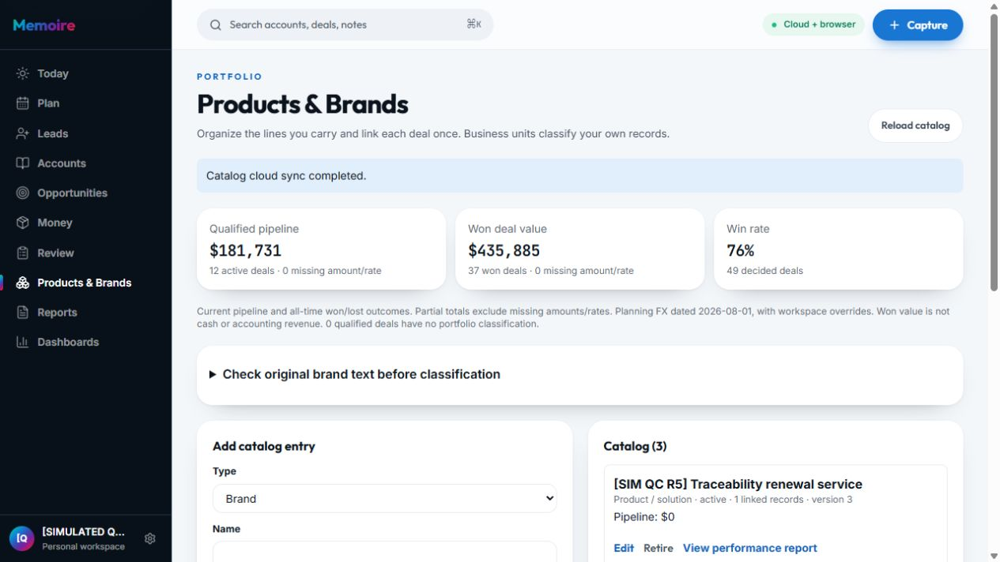
Production authenticated simulated QC R5 account. Catalog linked counts include Lead-stage records, while performance excludes Leads; inspect whether difference is explained. No cloud writes.https://www.memoire-official.com/app/products · 2026-10-11T10:28:29.425Z
DOM cùng bước · R2-09, R2-18
Bước2 · Today
Ổn trong ca thử
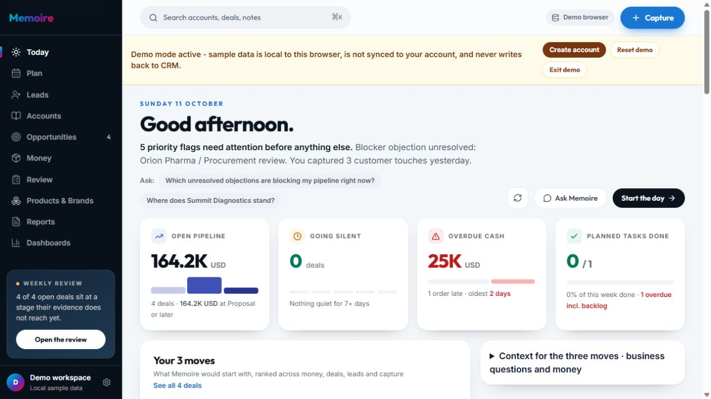
Local sample scope. Compare priority moves and overdue figure with Collections; assess action link specificity.http://127.0.0.1:5184/app/today · 2026-10-11T10:29:00.365Z
DOM cùng bước
Bước3 · Today mở quote
Cải tiến
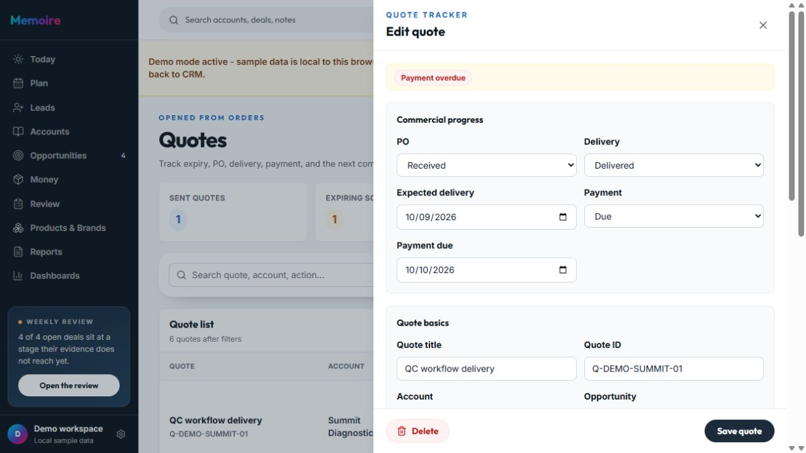
Start the day from Today opened Quotes with selected overdue quote editor. Context says Opened from Orders although origin was Today. Compare action named Check collection with destination/edit form.http://127.0.0.1:5184/app/quotes · 2026-10-11T10:29:23.072Z
DOM cùng bước · R2-01, R2-19
Bước4 · Lưu Paid thử nghiệm
Cần sửa
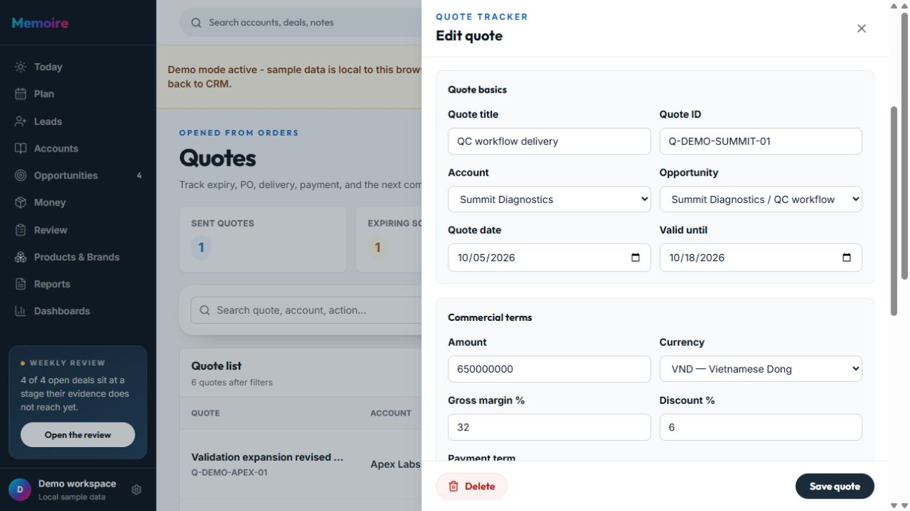
Changed sample Summit quote Payment to Paid and saved successfully; no payment receipt entered. Compare Collections for same opportunity ID.http://127.0.0.1:5184/app/quotes · 2026-10-11T10:30:26.246Z
DOM cùng bước
Bước5 · Quote giữ Paid
Cần sửa
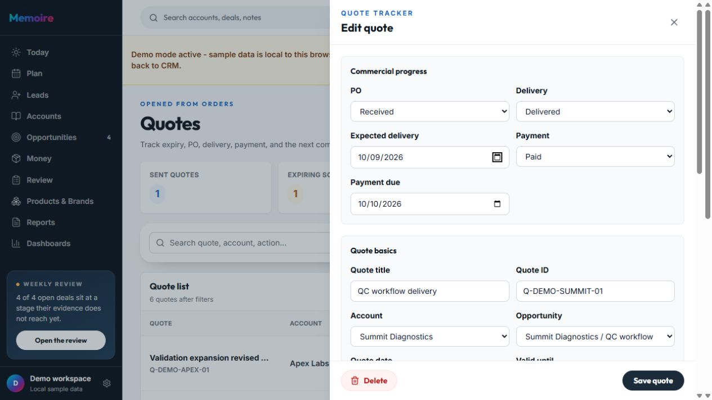
Sample quote Q-DEMO-SUMMIT-01 persisted Payment Paid without recording receipt. Screenshot displays status, DOM shows Quote updated.http://127.0.0.1:5184/app/quotes · 2026-10-11T10:30:50.934Z
DOM cùng bước · R2-01
Bước7 · Collections đối chiếu Paid
Cần sửa
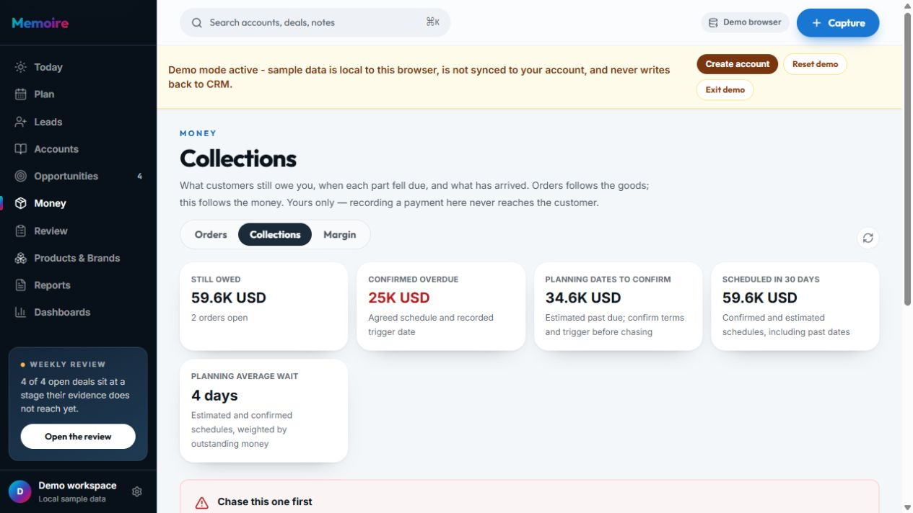
Accepted Collections view. Same Summit quote manually Paid remains 25000 USD confirmed overdue in receipts ledger; cash calculation does not invent a receipt.http://127.0.0.1:5184/app/revenue?view=collections · 2026-10-11T10:31:27.329Z
DOM cùng bước · R2-01
Bước8 · Lịch thu mở rộng
Cải tiến
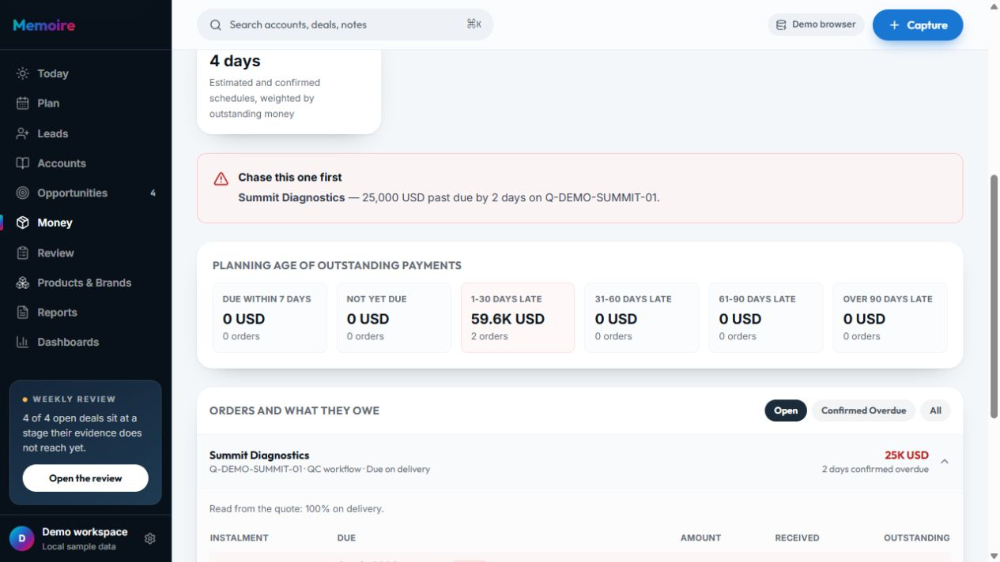
Expanded Summit: 25000 USD amount, Received 0 USD, outstanding 25000 USD. Amount input explicitly VND, received-on/how recorded. Delivery date input blank while trigger comes from recorded milestones; explain inherited date near field.http://127.0.0.1:5184/app/revenue?view=collections · 2026-10-11T10:32:24.813Z
DOM cùng bước
Bước9 · Ghi receipt một phần
Ổn trong ca thử
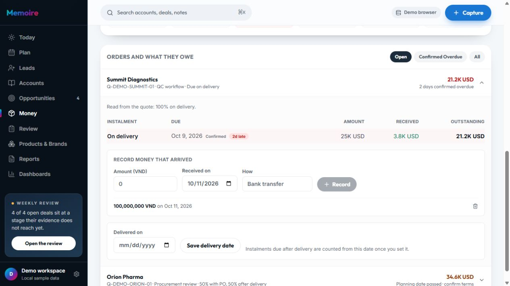
Recorded fictional receipt 100000000 VND on current date. Remaining Summit balance became 21153.85 USD, from 25000. Receipt listed exactly once; remove control present, no accounting export or bank sync implied.http://127.0.0.1:5184/app/revenue?view=collections · 2026-10-11T10:33:24.850Z
DOM cùng bước · R2-01, R2-02
Bước10 · Margin thiếu cost
Ổn trong ca thử
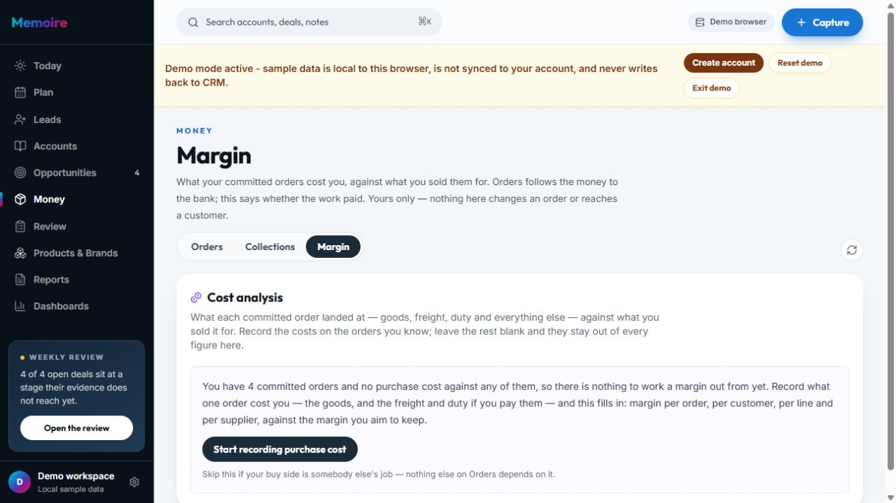
Local sample currently has no recorded order costs; inspect missing-cost disclosure and guided input. New partial receipt only changes cash, not sale value or landed cost.http://127.0.0.1:5184/app/revenue?view=margin · 2026-10-11T10:33:54.814Z
DOM cùng bước
Bước11 · Form cost
Cải tiến
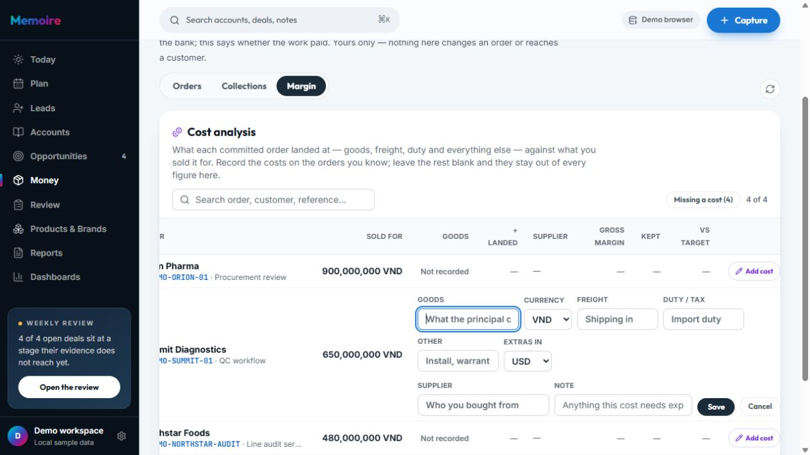
Cost recording on a local sample order; assess blank cost, FX and margin basis.http://127.0.0.1:5184/app/revenue?view=margin · 2026-10-11T10:37:39.497Z
DOM cùng bước · R2-17
Bước12 · Margin đã tính
Ổn trong ca thử
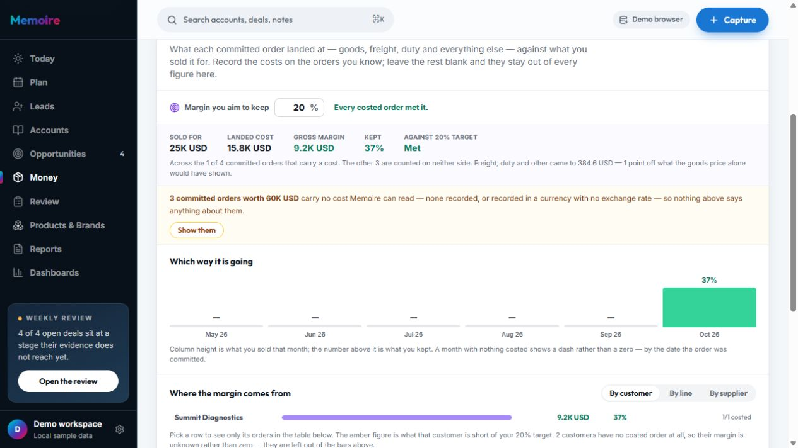
650m sold, 400m goods plus 10m freight VND => 240m gross/650m =36.923%; UI 9.2K USD/37%. Missing costs excluded.http://127.0.0.1:5184/app/revenue?view=margin · 2026-10-11T10:37:54.534Z
DOM cùng bước · R2-17
Bước13 · Plan tuần
Cải tiến
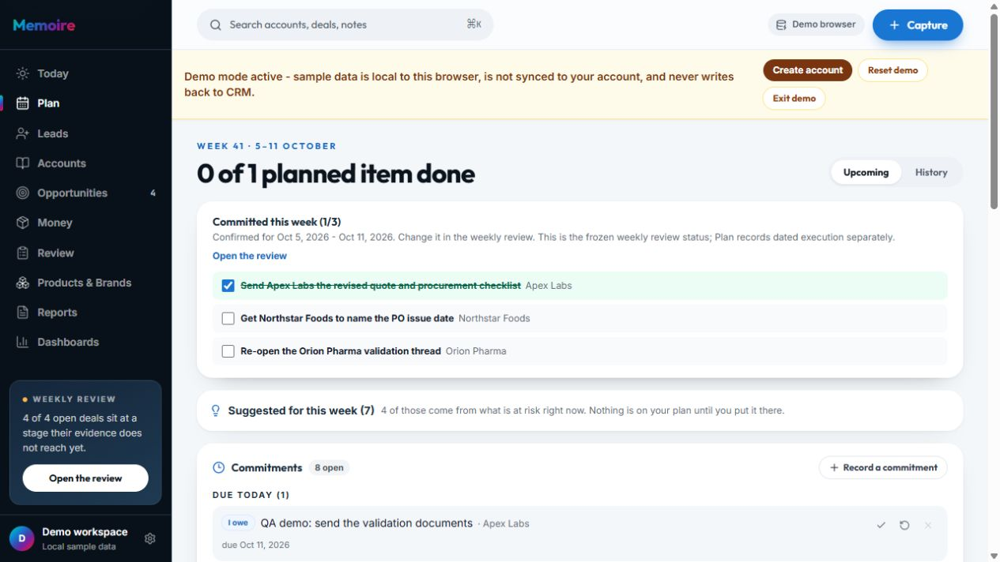
Frozen weekly priorities distinguished from dated execution; Sunday hidden by default despite selected current day; backlog label zero carried vs visible overdue current-week bill.http://127.0.0.1:5184/app/timeline · 2026-10-11T10:38:03.865Z
DOM cùng bước · R2-16
Bước14 · Composer cam kết
Cải tiến
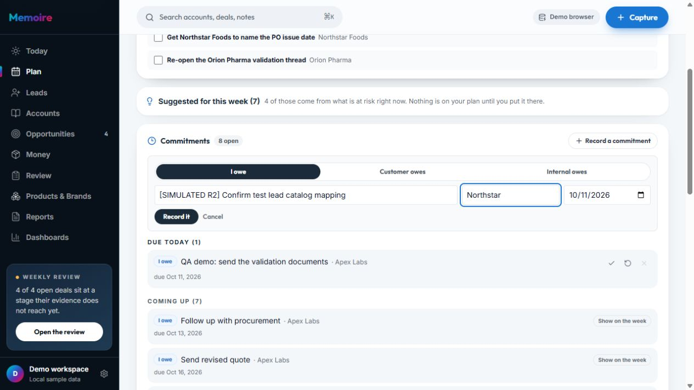
Customer search Northstar has no suggestion in seeded local demo; no opportunity selector. Typed customer allowed, assess lineage in source.http://127.0.0.1:5184/app/timeline · 2026-10-11T10:38:22.233Z
DOM cùng bước
Bước15 · Plan lịch sử
Ổn trong ca thử
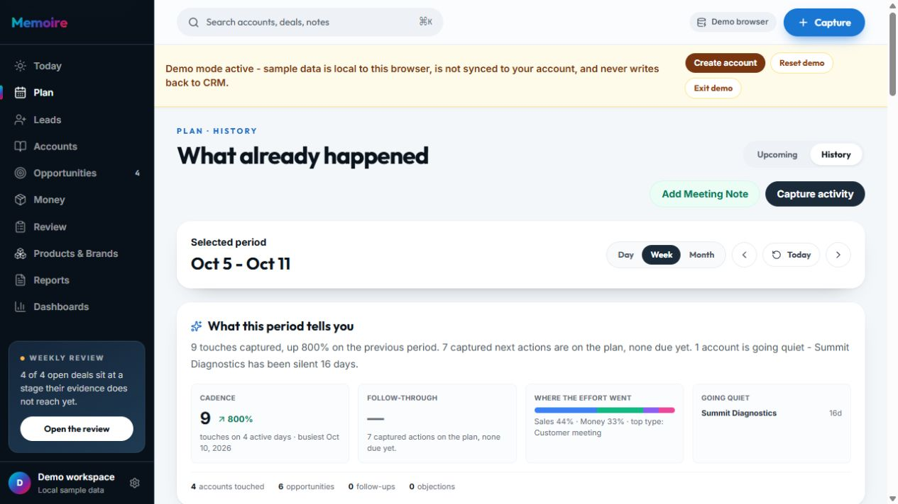
Captured original text vs accepted linked deal is explicit, but source/hash/internal tags dominate visible cards.http://127.0.0.1:5184/app/timeline?view=history · 2026-10-11T10:38:38.266Z
DOM cùng bước
Bước16 · Leads queue
Ổn trong ca thử
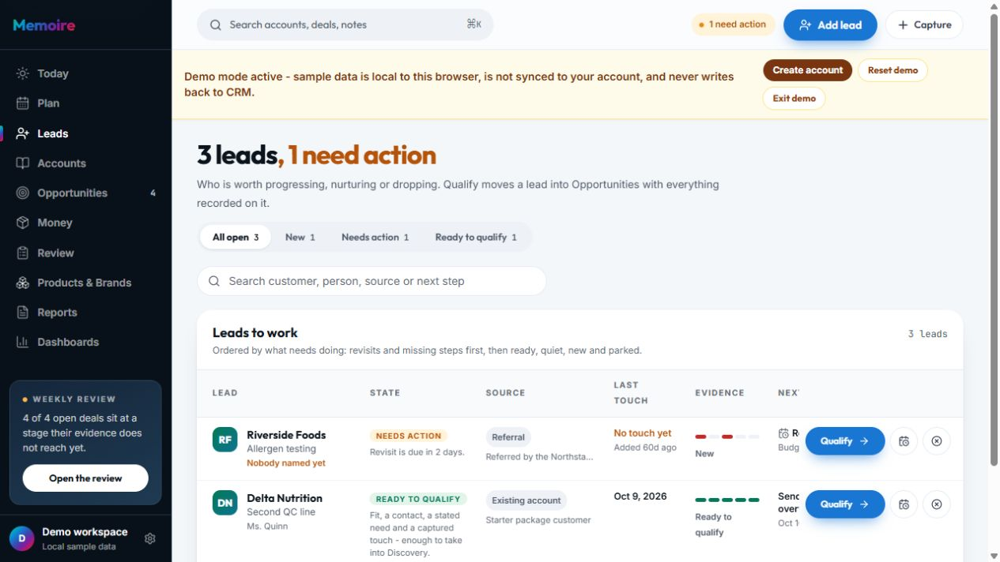
Three local leads separated from qualified pipeline; evidence and scheduled nurture visible.http://127.0.0.1:5184/app/leads · 2026-10-11T10:38:49.500Z
DOM cùng bước
Bước17 · Others cần tên manual
Ổn trong ca thử
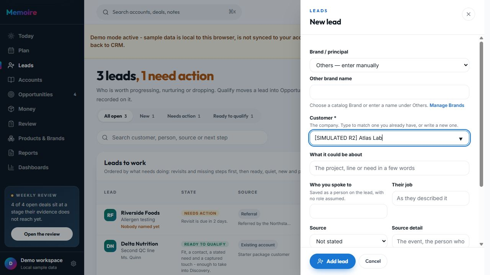
Others selected with blank manual name: native required validation prevents creation.http://127.0.0.1:5184/app/leads · 2026-10-11T10:39:09.804Z
DOM cùng bước
Bước18 · Qualify Lead
Cải tiến
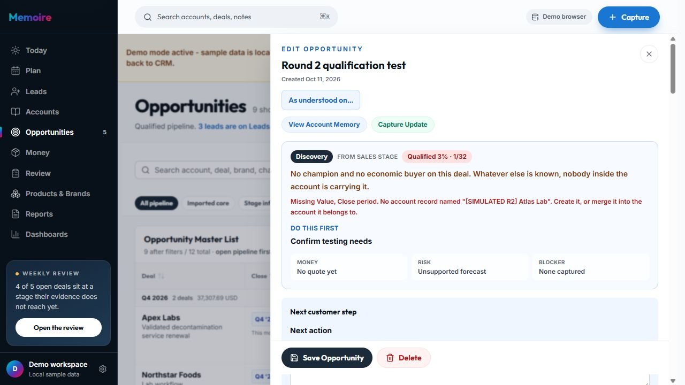
Same newly created lead becomes Discovery, Others manual brand retained, contact retained in stakeholder option. Account warning says no account record, while details hint claims already-linked existing customer.http://127.0.0.1:5184/app/opportunities?opportunityId=a2cb6052-49e0-4819-9c0c-b6faa99e952d · 2026-10-11T10:39:48.178Z
DOM cùng bước · R2-07, R2-13
Bước19 · Thông báo Account link
Cần sửa
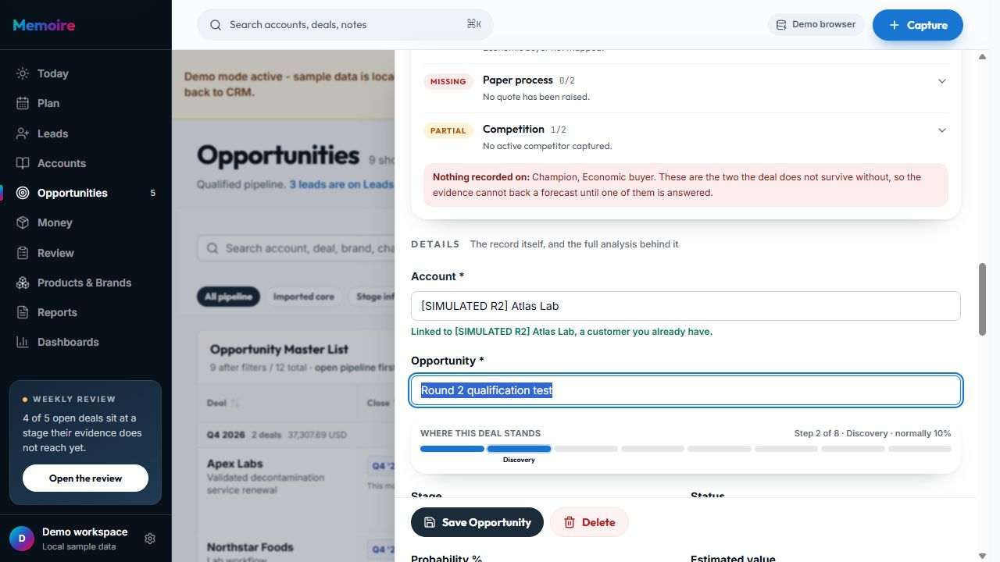
Details claims linked to an existing customer although overview reports no matching Account record. Recommendation base hint on verified account ID.http://127.0.0.1:5184/app/opportunities?opportunityId=a2cb6052-49e0-4819-9c0c-b6faa99e952d · 2026-10-11T10:39:55.667Z
DOM cùng bước · R2-07
Bước20 · Đường deal cũ
Cần sửa
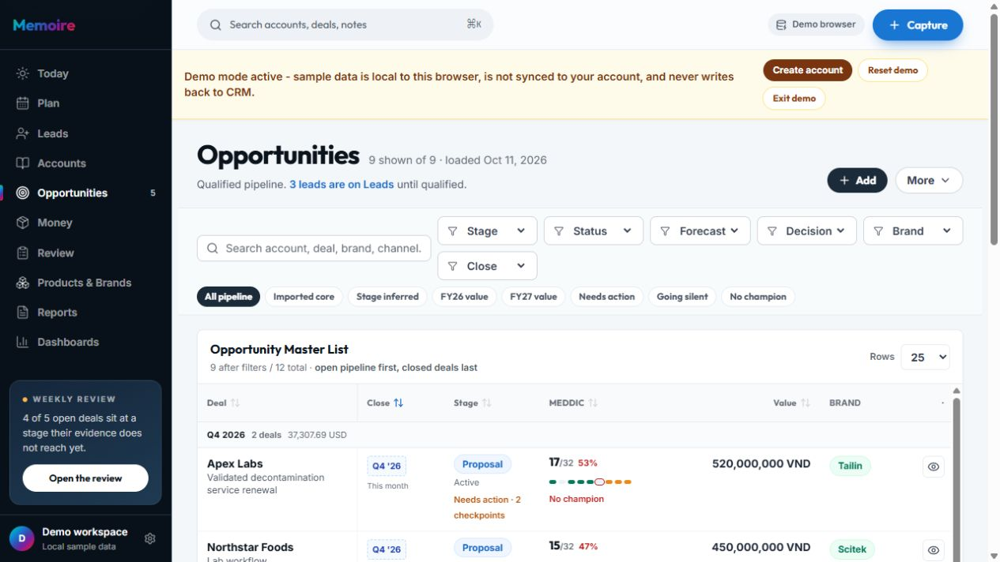
Known legacy App.tsx deal-ID route redirects to generic opportunity list, loses specific deal query/drawer.http://127.0.0.1:5184/app/opportunities · 2026-10-11T10:40:07.002Z
DOM cùng bước · R2-08
Bước21 · Accounts book
Cải tiến
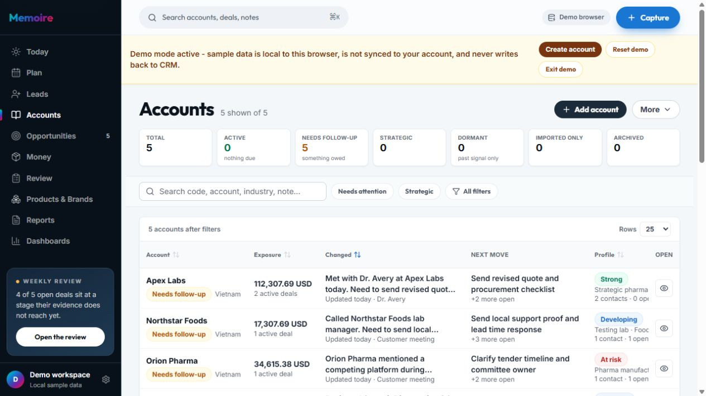
Account exposure displays qualified active pipeline, not receivables; sample Summit has 0 active deals despite overdue cash. Orphan account repair visible.http://127.0.0.1:5184/app/accounts · 2026-10-11T10:40:18.886Z
DOM cùng bước · R2-07
Bước22 · Account overview
Cải tiến
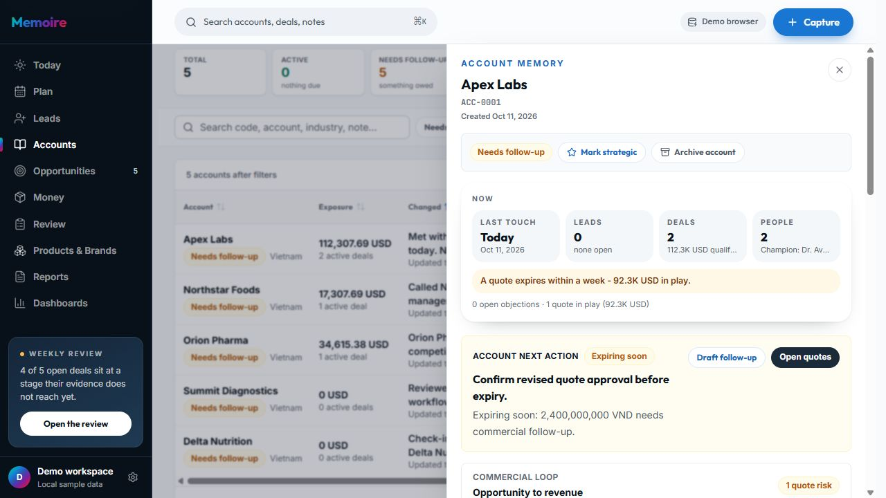
Account detail connects quotes, qualified deals, contact count and dated history. Some Open revenue/opportunities actions lose current account scope.http://127.0.0.1:5184/app/accounts?accountId=demo-account-apex · 2026-10-11T10:40:36.131Z
DOM cùng bước · R2-08
Bước23 · Account people
Cải tiến
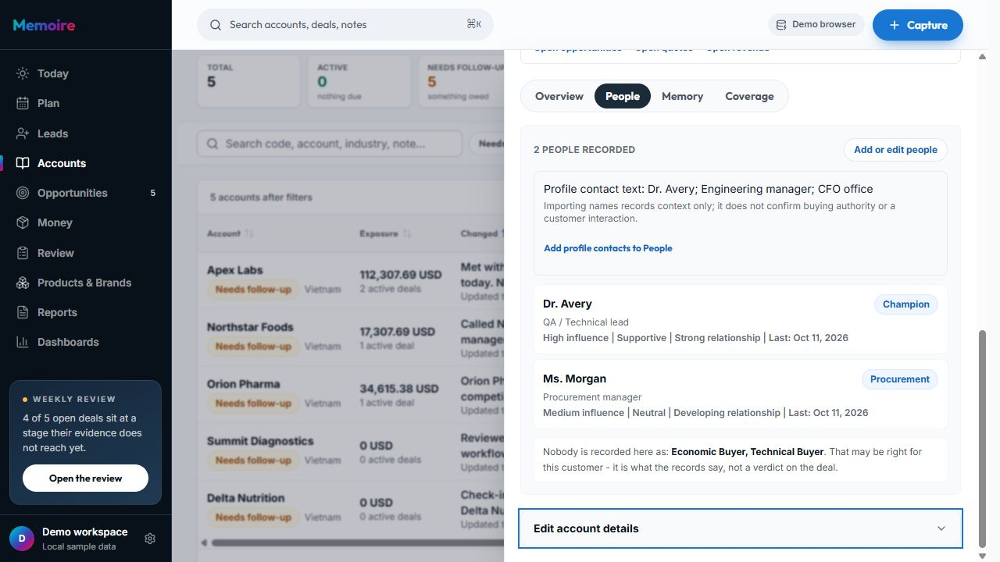
Imported contact names are context, no authority assumed; recorded account-wide role badge lacks per-opportunity confirmation context.http://127.0.0.1:5184/app/accounts?accountId=demo-account-apex · 2026-10-11T10:40:44.433Z
DOM cùng bước · R2-11
Bước24 · Coverage
Cần sửa
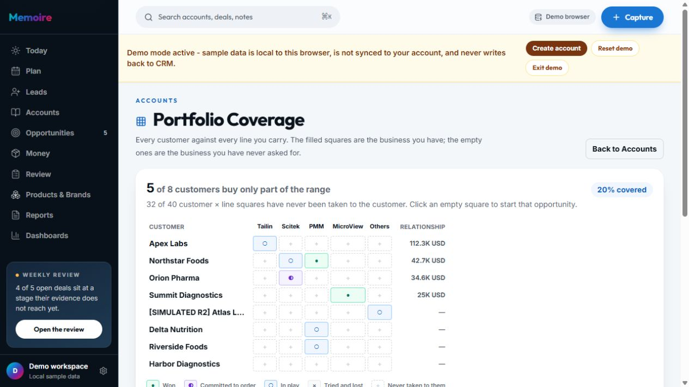
Account filter retained from detail; statuses explicit first-touch/proposed/won vs opportunity stage. Inspect hierarchy and no invented gaps.http://127.0.0.1:5184/app/portfolio-coverage?accountName=Apex%20Labs · 2026-10-11T10:40:55.358Z
DOM cùng bước · R2-05, R2-08
Bước25 · Coverage mở deal mới
Ổn trong ca thử
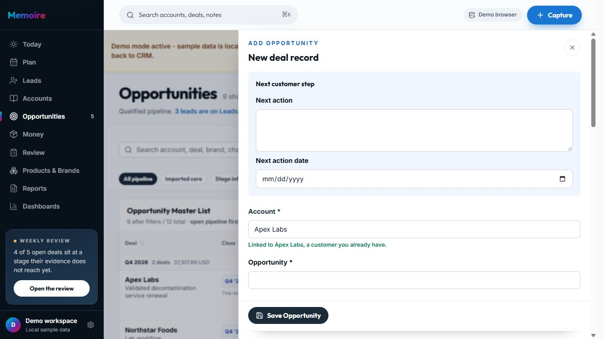
Empty matrix cell prefilled customer and Scitek catalog Brand in new Opportunity drawer. No save performed.http://127.0.0.1:5184/app/opportunities · 2026-10-11T10:41:16.450Z
DOM cùng bước · R2-05
Bước26 · Catalog chặn trùng
Cải tiến
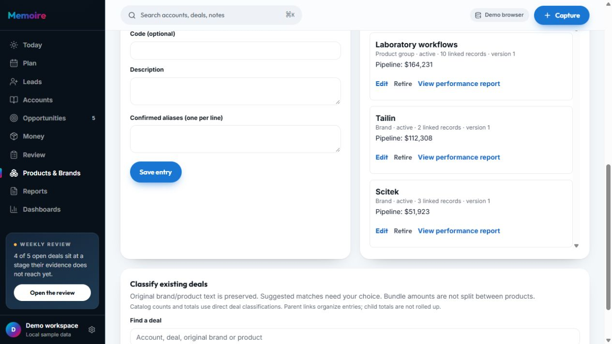
Duplicate normalized Brand name is rejected. Catalog is a long flat list, no search/kind filter visible at 17 entries.http://127.0.0.1:5184/app/products · 2026-10-11T10:42:06.385Z
DOM cùng bước · R2-09, R2-18
Bước27 · Report Brand
Cải tiến
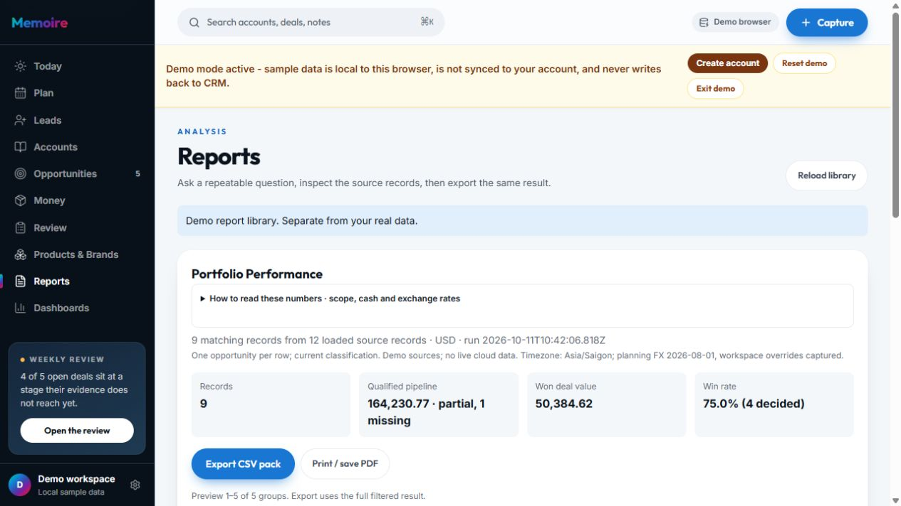
Results first, qualified scope, missing money preserved; catalog PMM 4 linked versus report 2 explained by Leads exclusion, but no easy lead segmentation on catalog.http://127.0.0.1:5184/app/reports · 2026-10-11T10:42:18.811Z
DOM cùng bước · R2-09
Bước28 · Preset khoản thu
Cải tiến
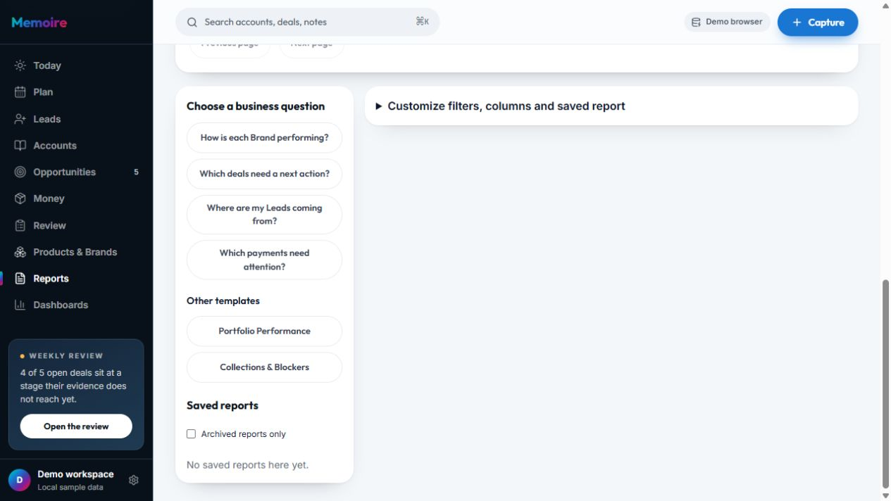
Collections preset auto-runs; inspect actual received amount, confirmed overdue and due basis after local partial receipt.http://127.0.0.1:5184/app/reports?report=new · 2026-10-11T10:42:25.668Z
DOM cùng bước · R2-12, R2-15
Bước29 · Kết quả khoản thu
Cải tiến
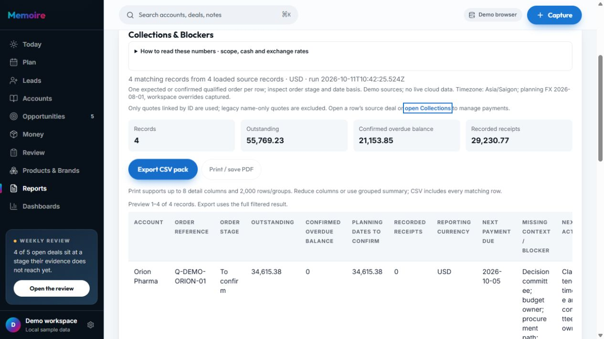
Actual ledger aligns with Collections 55,769.23 outstanding,21,153.85 confirmed overdue,29,230.77 receipts. Payments attention preset includes 2 fully collected rows.http://127.0.0.1:5184/app/reports?report=new · 2026-10-11T10:42:35.086Z
DOM cùng bước · R2-02, R2-12, R2-15
Bước30 · Report CSV pack
Ổn trong ca thử
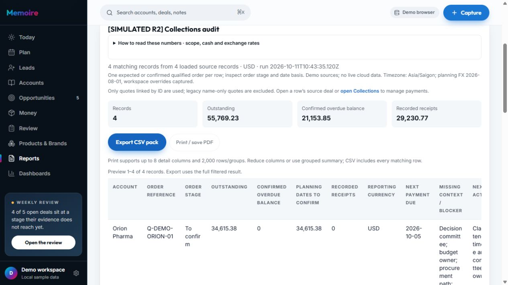
Local saved report re-run then CSV pack downloaded; includes full filtered rows, summary, run metadata; first pre-run attempt was audit automation timeout, not product export defect.http://127.0.0.1:5184/app/reports?report=report-ac486440-6b1d-49a9-b9a9-484a3b059dea · 2026-10-11T10:43:48.707Z
DOM cùng bước · R2-02, R2-12
Bước31 · Dashboard từ report
Cải tiến
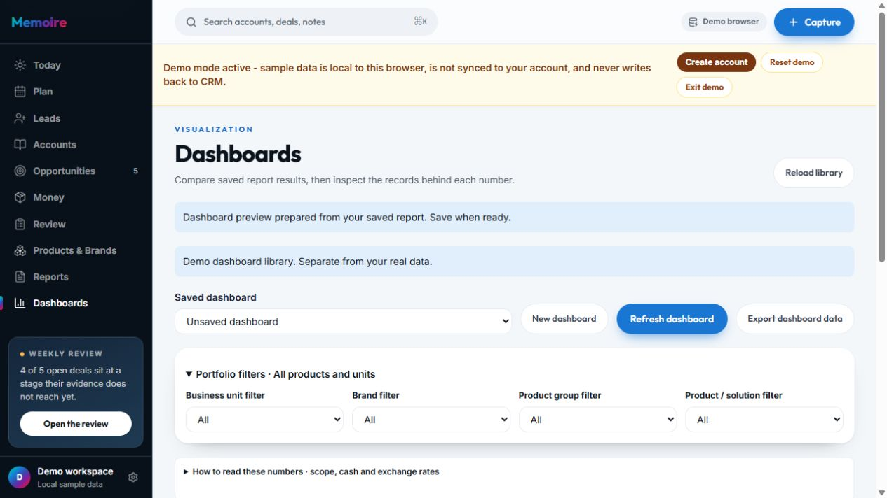
Saved report generates auto-run unsaved dashboard. Filters expose raw ID suffixes even unique labels. Snapshot time/source coverage explicit.http://127.0.0.1:5184/app/dashboards?dashboard=new&report=report-ac486440-6b1d-49a9-b9a9-484a3b059dea · 2026-10-11T10:44:13.036Z
DOM cùng bước · R2-19, R2-23
Bước32 · Dashboard source records
Cải tiến
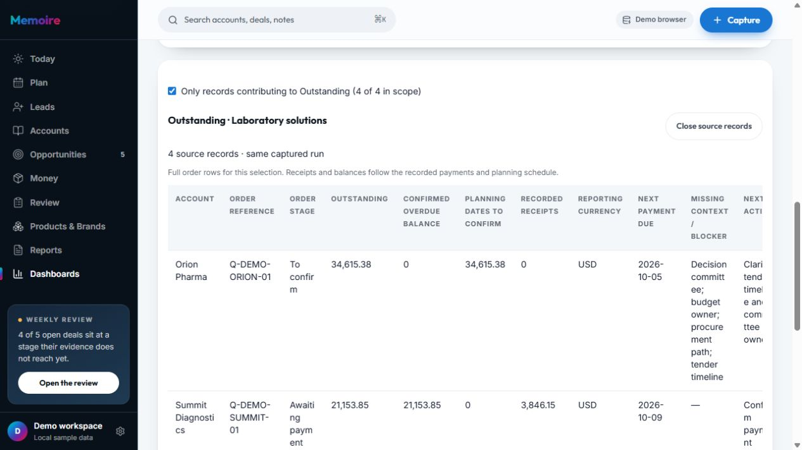
Source inspect preserves captured run; checkbox includes zero outstanding rows as contributing. Define contributing versus in-scope wording.http://127.0.0.1:5184/app/dashboards?dashboard=new&report=report-ac486440-6b1d-49a9-b9a9-484a3b059dea&widget=widget-db59a03b-7d8a-45e7-8009-f45201efe74a&group=%5B%22demo-unit-laboratory%22%5D · 2026-10-11T10:44:25.453Z
DOM cùng bước · R2-23
Bước33 · Review thay đổi
Cần sửa
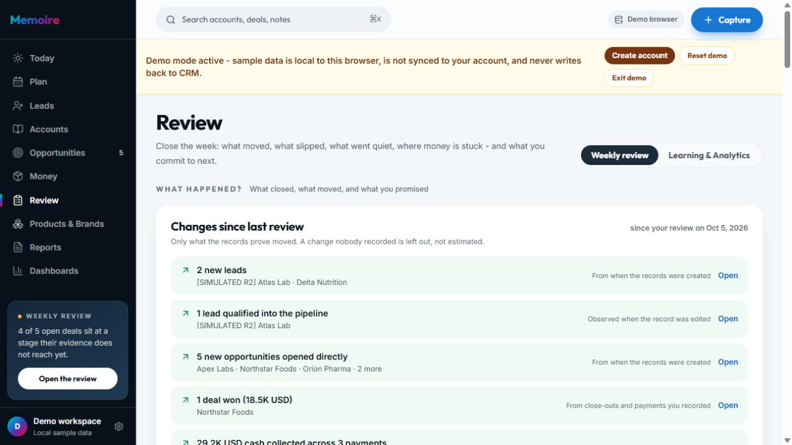
Weekly scoreboard: 2 won/43.5K USD; Business review same Oct5–11 says 1 won/18.5K USD. Changes uses close-out ledger while scoreboard infers stage Won. Targets seed 10B USD with demo base USD: unrealistic.http://127.0.0.1:5184/app/reviews · 2026-10-11T10:44:54.468Z
DOM cùng bước · R2-06
Bước34 · Review analytics
Cải tiến
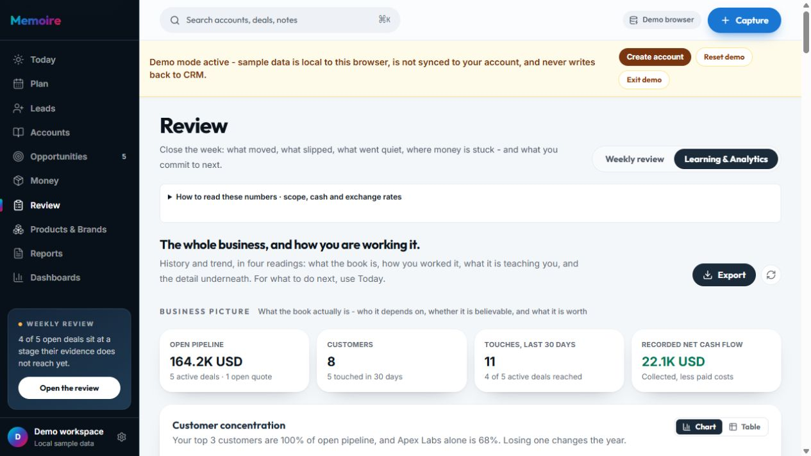
Analytic scopes include outcome history versus present book; low sample warning exists but advice says big deals are failing from only 6 outcomes. Need more cautious language and source links.http://127.0.0.1:5184/app/reviews?view=analytics · 2026-10-11T10:45:15.688Z
DOM cùng bước
Bước36 · Business review
Cần sửa
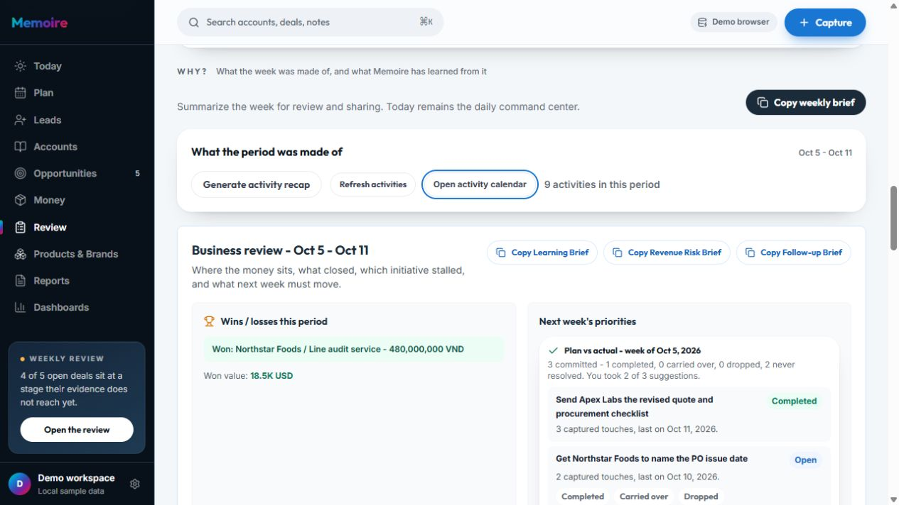
Same-week business review includes only Northstar480m VND,18.5K USD (closeout-based), requiring explicit source basis/union dedupe for consistency.http://127.0.0.1:5184/app/reviews · 2026-10-11T10:45:18.918Z
DOM cùng bước · R2-06
Bước37 · Capture tiếng Việt
Cần sửa
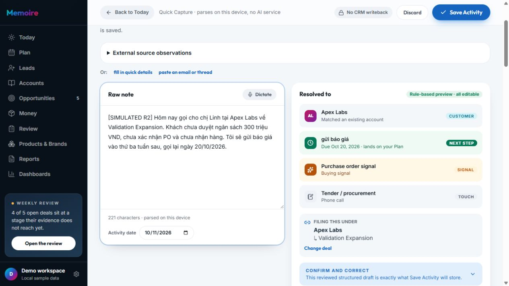
Vietnamese note: chưa xác nhận PO becomes Purchase order signal; gửi báo giá thứ ba tuần sau incorrectly gets Oct20 belonging to second callback clause. Nothing saved.http://127.0.0.1:5184/app/capture · 2026-10-11T10:45:56.552Z
DOM cùng bước · R2-03
Bước38 · Ask câu tiếng Việt
Giới hạn
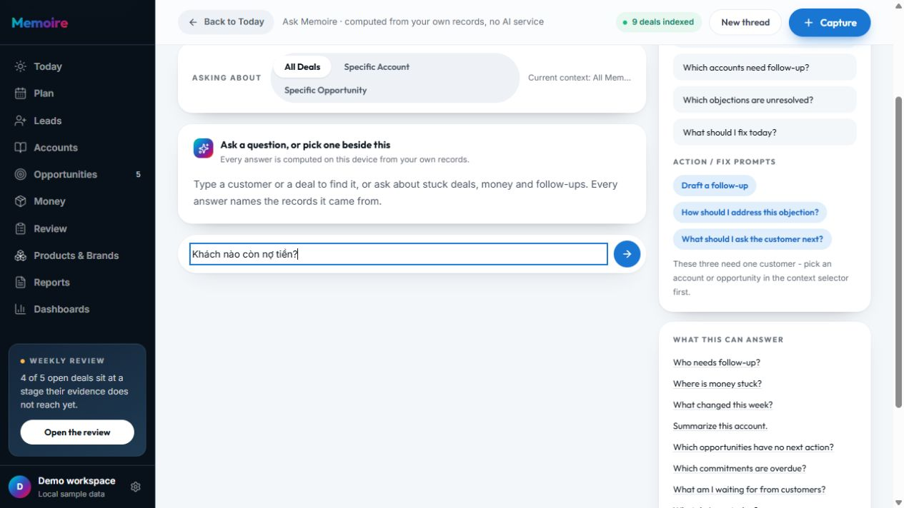
Asked common Vietnamese cash phrase Khách nào còn nợ tiền?; DOM response unsupported, screenshot still initial ask state. Use follow-up capture for answer evidence.http://127.0.0.1:5184/app/ask · 2026-10-11T10:46:35.454Z
DOM cùng bước · R2-14
Bước39 · Ask về Apex
Cải tiến
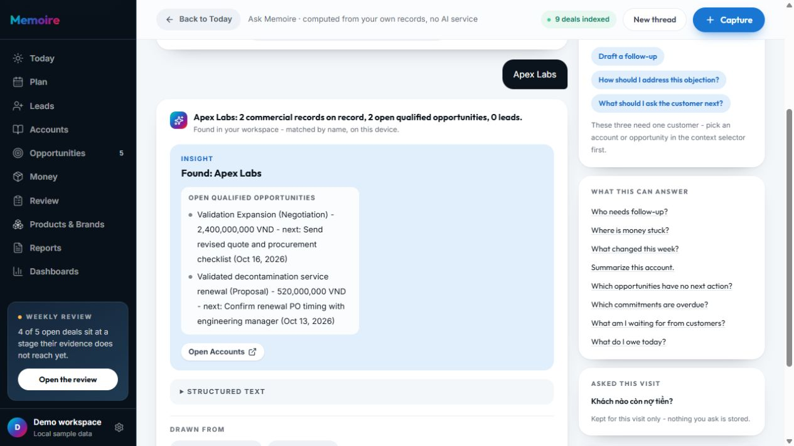
Account lookup lists two qualified opportunities; Open Accounts action generic loses account scope.http://127.0.0.1:5184/app/ask · 2026-10-11T10:46:50.021Z
DOM cùng bước · R2-08
Bước40 · Ask không hỗ trợ
Cần sửa
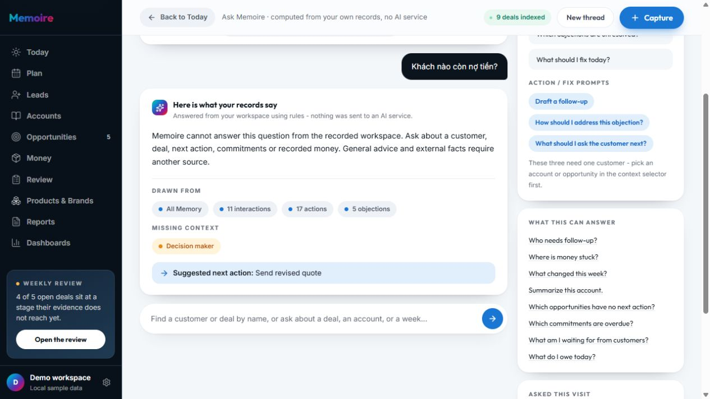
Common Vietnamese cash phrasing is unsupported; generic suggested next action Send revised quote appears unrelated to question. Support phrase or show close supported cash preset without unrelated advice.http://127.0.0.1:5184/app/ask · 2026-10-11T10:46:56.591Z
DOM cùng bước · R2-14
Bước41 · Ask về tiền
Cần sửa
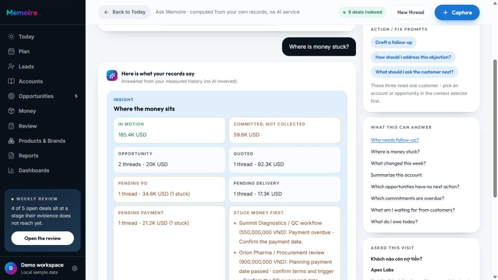
Supported preset shows money from same ledger with recorded due basis; compare unsupported Vietnamese phrase.http://127.0.0.1:5184/app/ask · 2026-10-11T10:47:03.318Z
DOM cùng bước · R2-02, R2-14
Bước42 · Ask guard khi thiếu khách
Ổn trong ca thử
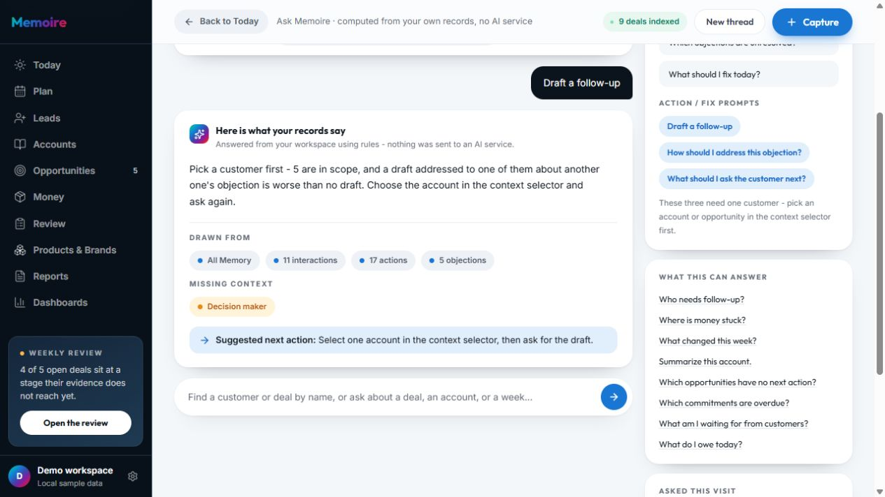
Global draft refuses multiple accounts and requests explicit account; good guard.http://127.0.0.1:5184/app/ask · 2026-10-11T10:47:13.328Z
DOM cùng bước
Bước43 · Stakeholder chưa xác nhận
Cải tiến
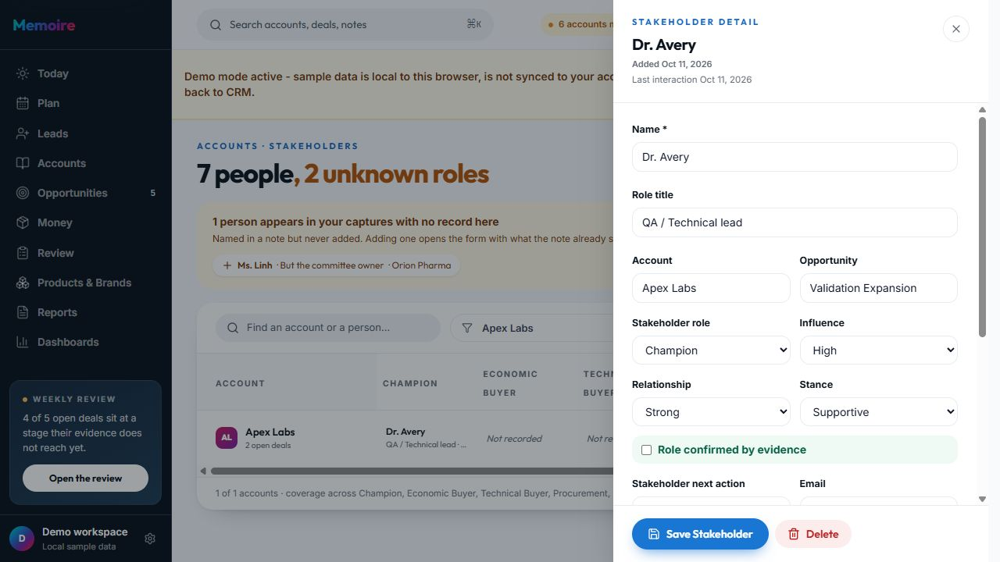
Dr Avery labeled Champion in account map, but Role confirmed by evidence unchecked; MEDDIC correctly refuses strong champion. Surface tentative/confirmed on same map.http://127.0.0.1:5184/app/stakeholders?accountName=Apex%20Labs · 2026-10-11T10:47:36.749Z
DOM cùng bước · R2-11
Bước44 · Objections ledger
Cải tiến
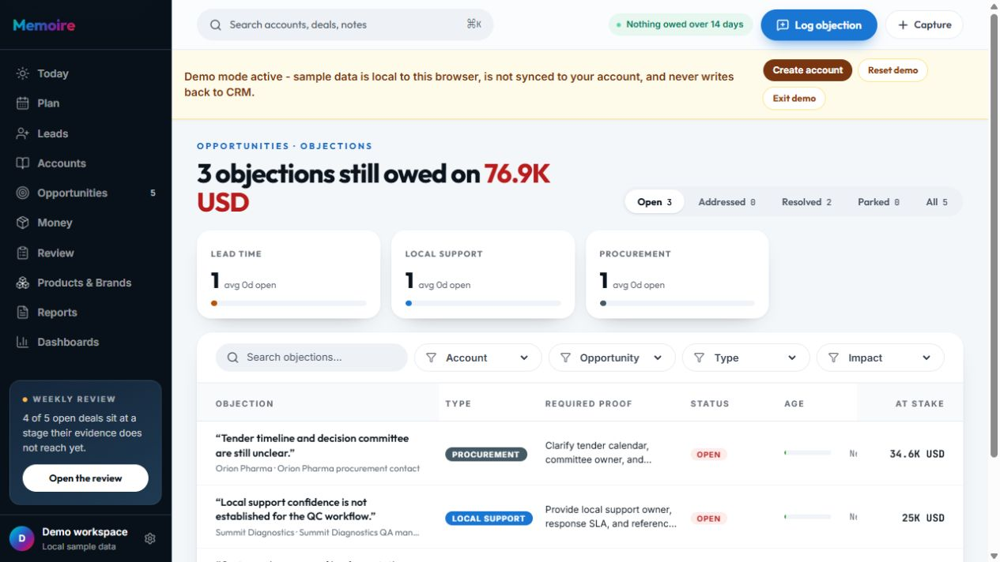
Status filters, proof needed and dates clear. At-stake amount includes won Summit25K, so state/scope label needed to distinguish sales blocker from delivery dispute.http://127.0.0.1:5184/app/objections · 2026-10-11T10:47:52.637Z
DOM cùng bước
Bước45 · Form objection
Giới hạn
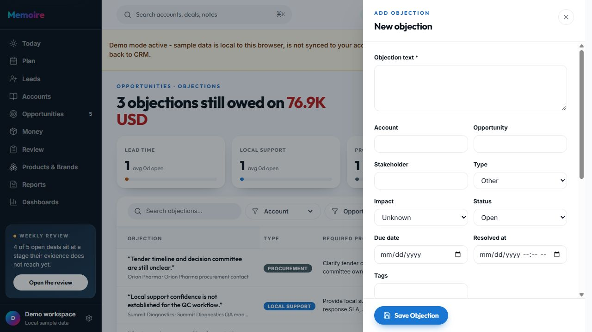
Required objection text, IDs via scope resolution, separate response/proof/resolution fields. No save performed.http://127.0.0.1:5184/app/objections · 2026-10-11T10:48:03.627Z
DOM cùng bước
Bước46 · Vault map và text
Cải tiến
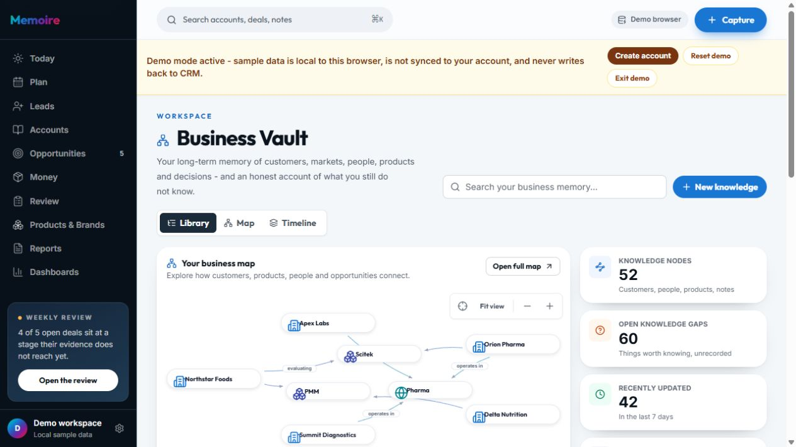
Vault provides map plus text list and explicit missing facts; relationship amount does not label inclusion of lost deal values. Gap actions send exact question to Ask.http://127.0.0.1:5184/app/vault · 2026-10-11T10:48:20.777Z
DOM cùng bước
Bước47 · Vault chuyển Ask
Cần sửa
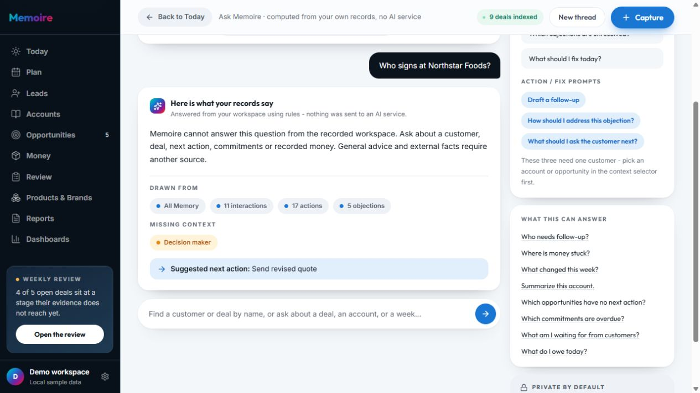
System-generated Who signs at Northstar Foods question: verify meaningful fact answer versus name lookup shortcut.http://127.0.0.1:5184/app/ask?question=Who%20signs%20at%20Northstar%20Foods%3F · 2026-10-11T10:48:28.044Z
DOM cùng bước · R2-14
Bước48 · Initiative editor
Cải tiến
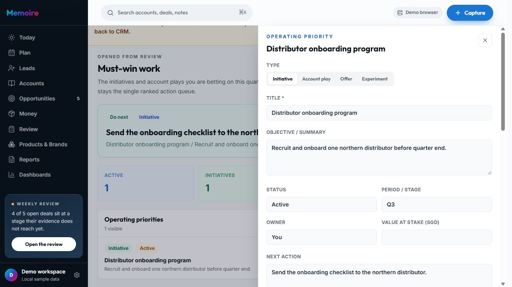
Initiative has objective/owner/next action/explicit activity links and hypothesis. Value field fixed SGD while app reports USD; status free text. No save.http://127.0.0.1:5184/app/operating-system · 2026-10-11T10:48:53.511Z
DOM cùng bước
Bước49 · Playbook
Cần sửa
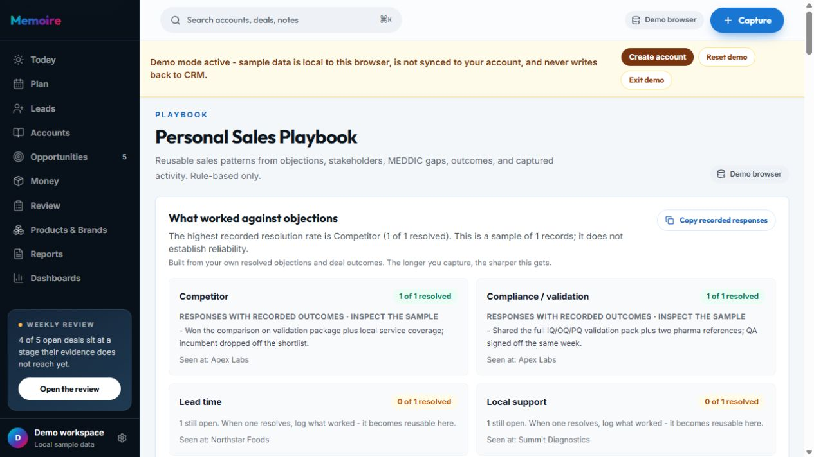
Metrics gap counts all 8 active records, including 3 unqualified Leads. Low/medium sample badges exist, but single completed action labeled often unclear.http://127.0.0.1:5184/app/playbook · 2026-10-11T10:49:10.987Z
DOM cùng bước · R2-10
Bước50 · Assets
Giới hạn
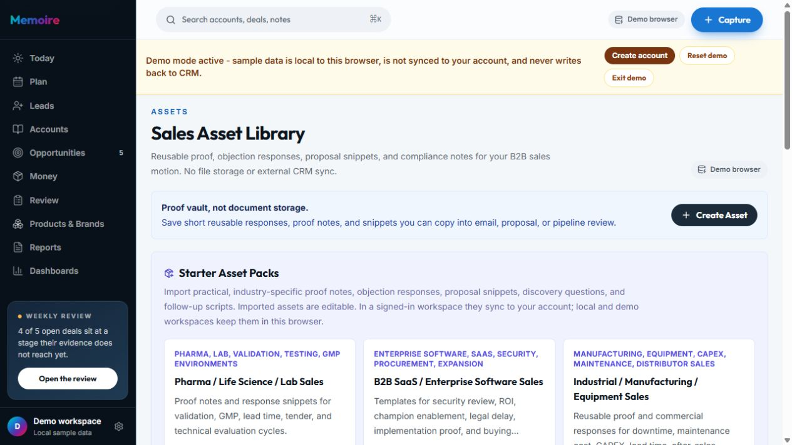
Sales asset library supports draft/reuse status; no real sharing performed.http://127.0.0.1:5184/app/assets · 2026-10-11T10:49:42.104Z
DOM cùng bước
Bước51 · Settings Workspace
Ổn trong ca thử
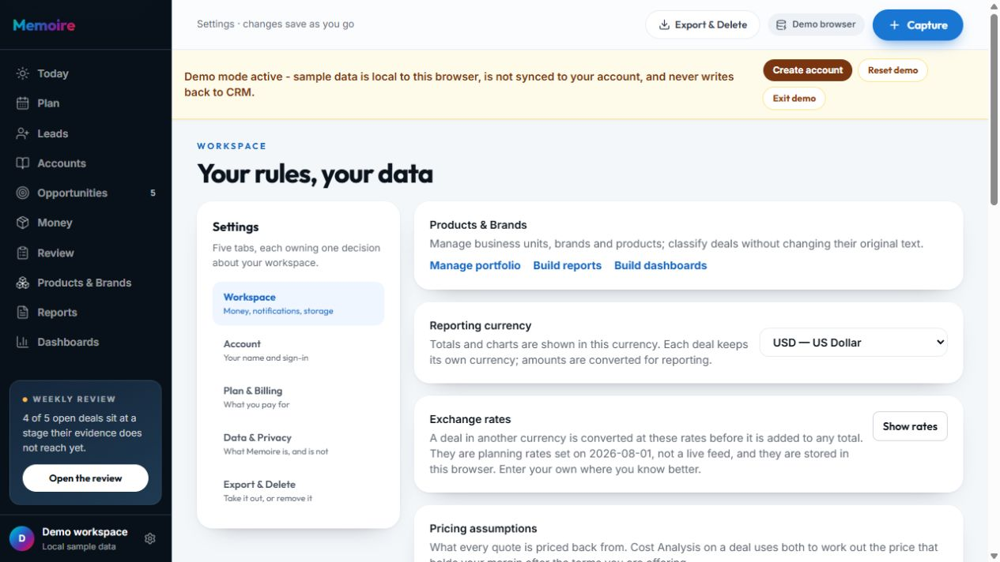
Reporting currency USD; explicit planning FX date, separate financing assumptions; honest demo-local sync, disabled retry and backup recovery explanation. Read-only.http://127.0.0.1:5184/app/settings · 2026-10-11T10:55:18.353Z
DOM cùng bước · R2-04
Bước52 · Settings Account
Giới hạn
Demo account has no real profile and explains sign-in requirement. Password, OAuth and profile cloud save not executed.http://127.0.0.1:5184/app/settings?tab=profile · 2026-10-11T10:55:35.536Z
DOM cùng bước
Bước53 · Settings Billing
Giới hạn
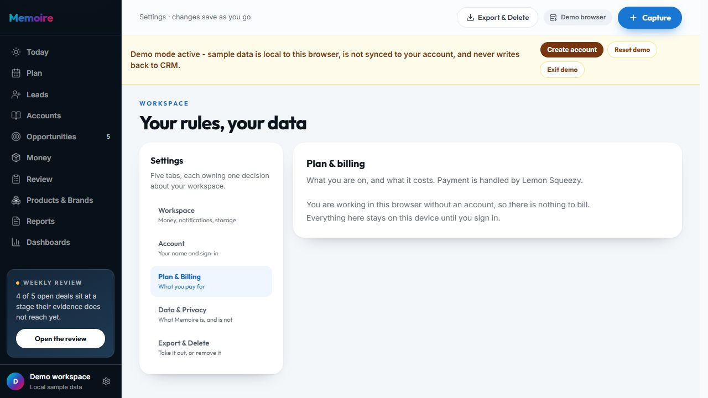
Demo plan clearly sample and cloud billing not configured. No checkout or financial action.http://127.0.0.1:5184/app/settings?tab=billing · 2026-10-11T10:55:49.987Z
DOM cùng bước
Bước54 · Settings Privacy
Cải tiến
Data & Privacy gives explicit source boundaries and links terms/privacy; inspected copy, no disclosure or sharing action.http://127.0.0.1:5184/app/settings?tab=boundaries · 2026-10-11T10:56:13.571Z
DOM cùng bước
Bước55 · Settings Export
Ổn trong ca thử
Demo ZIP downloaded successfully; restore disabled in demo, deletion control observed but not activated. Actual ZIP contents will be inspected offline.http://127.0.0.1:5184/app/settings?tab=export · 2026-10-11T10:56:36.697Z
DOM cùng bước
Bước56 · Scoreboard đối chiếu
Cần sửa
Oct5–11 Scoreboard 2 wins / 43,461.54 USD, whereas Business review 1 win /18,461.54. Also displays Q4 2.5B USD and annual10B USD targets; verify stored target currency before treating as calculation defect.http://127.0.0.1:5184/app/reviews · 2026-10-11T10:57:02.980Z
DOM cùng bước · R2-04, R2-06
Bước57 · Global Search
Cải tiến
Search Apex returns canonical account and two opportunities. Focus enters dialog; Escape dismissal checked separately. Header shortcut uses Command glyph in Windows environment: copy polish opportunity.http://127.0.0.1:5184/app/reviews · 2026-10-11T10:57:15.929Z
DOM cùng bước · R2-19
Bước59 · Leads mobile
Ổn trong ca thử
Verified /app/leads at390x844. Mobile lead cards and bottom navigation; no document-wide overflow observed via DOM check.http://127.0.0.1:5184/app/leads · 2026-10-11T10:57:52.878Z
DOM cùng bước
Bước60 · Lead form mobile
Ổn trong ca thử
 390x844 Lead drawer. BrandSelect catalog/options retained; form scrolls internally and footer actions visible; empty required Customer keeps save disabled. Cancel without save.
390x844 Lead drawer. BrandSelect catalog/options retained; form scrolls internally and footer actions visible; empty required Customer keeps save disabled. Cancel without save.http://127.0.0.1:5184/app/leads · 2026-10-11T10:58:18.415Z
DOM cùng bước
Bước61 · Reports mobile
Cải tiến
390x844 Reports: results, preset choices and customization present in DOM; screenshot verifies top result layout only. No formal end-to-end screen-reader/mobile-device acceptance. Configuration is scroll-intensive.http://127.0.0.1:5184/app/reports · 2026-10-11T10:58:32.928Z
DOM cùng bước · R2-15
Bước62 · Must-win priorities
Ổn trong ca thử
Supporting Must-win work keeps initiative separate from Today ranked queue, shows one explicit local sample priority and unrecorded value as Not set.http://127.0.0.1:5184/app/operating-system · 2026-10-11T10:59:43.454Z
DOM cùng bước
Bước63 · Founder import gate / Today
Giới hạn
Founder import route is gated and redirected to Today in demo; no import file or cloud commit tested. Today nudge renders unknown-value Atlas deal as 0 USD, whereas main priority correctly says missing evidence. Source follow-up required.http://127.0.0.1:5184/app/today · 2026-10-11T11:00:00.719Z
DOM cùng bước · R2-13
Bước64 · Reset demo
Ổn trong ca thử
Reset through normal demo recovery restored4 open qualified deals and overdue25K USD, removing Atlas trial and100M receipt. Sample definition cleanup is covered by sampleData source; no production data changed. Demo then exited normally.http://127.0.0.1:5184/app/today · 2026-10-11T11:00:54.271Z
DOM cùng bước
Bước65 · Landing
Cải tiến
Exited demo successfully to landing; no console errors. Value proposition, sample demo CTA, signup and pricing publicly discoverable. No form submission.http://127.0.0.1:5184/ · 2026-10-11T14:51:23.687Z
DOM cùng bước
Bước66 · Login
Giới hạn
Login has labelled email/password with appropriate input types and forgot-password link. Local cloud is intentionally unconfigured; no auth submission, OAuth or email delivery tested. Screenshot has no show-password control.http://127.0.0.1:5184/login · 2026-10-11T14:51:52.068Z
DOM cùng bước · R2-22
Bước67 · Forgot password
Giới hạn
Recovery page labelled email and explicit return-to-login; no email submitted. Delivery, expiry and recovery link not exercised.http://127.0.0.1:5184/forgot-password · 2026-10-11T14:52:23.536Z
DOM cùng bước
Bước68 · Signup
Cải tiến
Signup labels, name/email/autocomplete/password policy visible. No account created. Privacy/terms links absent from the signup surface; consider providing context before submission.http://127.0.0.1:5184/signup · 2026-10-11T14:52:45.011Z
DOM cùng bước · R2-22
Bước69 · Verify-email thiếu context
Cần sửa
Direct /verify-email without signup/email state still says We have sent a verification link, but offers no resend action. No email was sent in this audit; refresh/deep link loses recipient context.http://127.0.0.1:5184/verify-email · 2026-10-11T14:53:05.316Z
DOM cùng bước · R2-20
Bước70 · Pricing
Ổn trong ca thử
Preview free without card or trial countdown; Personal10USD monthly after preview; Team marked Later and not sold. No purchase or checkout tested.http://127.0.0.1:5184/pricing · 2026-10-11T14:53:27.239Z
DOM cùng bước
Bước71 · Use Cases
Cải tiến
Use Cases public information read; customer scenarios and sample illustrations, no external form submission.http://127.0.0.1:5184/use-cases · 2026-10-11T14:53:37.196Z
DOM cùng bước · R2-21
Bước72 · Quote-to-cash guide
Cải tiến
Quote-to-cash guide publicly readable and ties milestones to commercial follow-up. No claim of invoice issuance or bank integration verified.http://127.0.0.1:5184/quote-to-cash · 2026-10-11T14:54:19.704Z
DOM cùng bước · R2-21
Bước73 · Privacy public
Cần sửa
Privacy document accessible from footer; audit checks discoverability and product description only, not legal compliance.http://127.0.0.1:5184/legal/privacy · 2026-10-11T14:54:39.384Z
DOM cùng bước · R2-24
Bước74 · Contact form
Giới hạn
Contact request labels and purpose reviewed; no details entered and no request sent.http://127.0.0.1:5184/request-access · 2026-10-11T14:55:27.388Z
DOM cùng bước · R2-22
Bước75 · 404
Ổn trong ca thử
Unknown public route gives clear Page not found and recovery destinations instead of blank screen.http://127.0.0.1:5184/__round2_missing_route__ · 2026-10-11T14:56:02.216Z
DOM cùng bước
Bước76 · Sync production
Giới hạn
Read-only production Settings: cloud available, none known unsynced changes after page load. Old-tab Sync issue recovered during navigation, without clicking Retry. Notification panel explicitly states scheduled sender is not configured; preferences alone do not deliver email.https://www.memoire-official.com/app/settings · 2026-10-11T14:56:29.322Z
DOM cùng bước